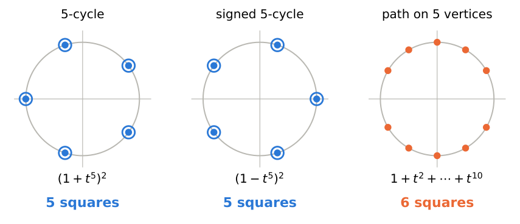
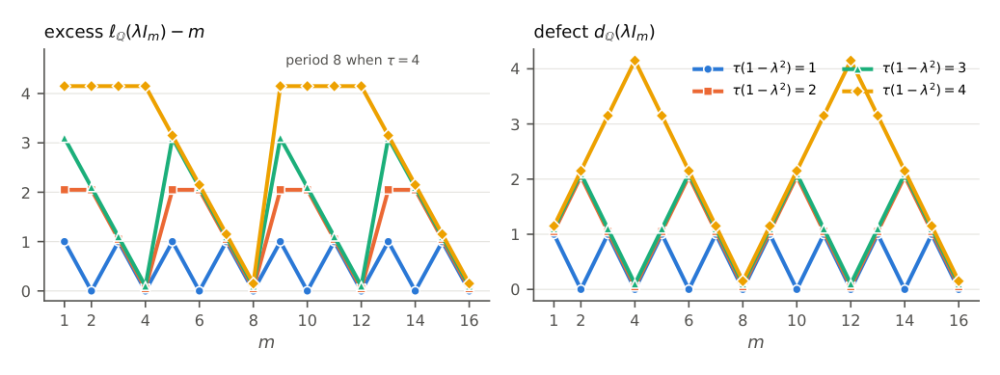
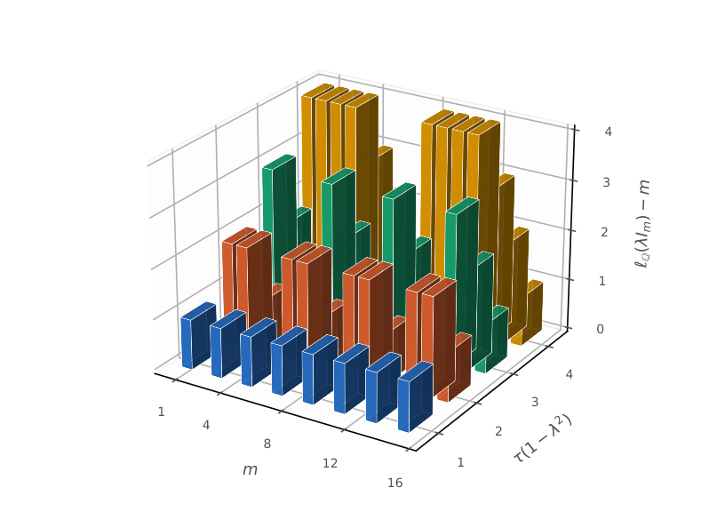
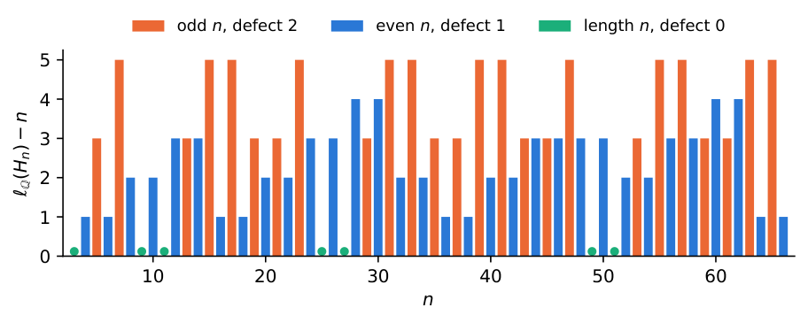
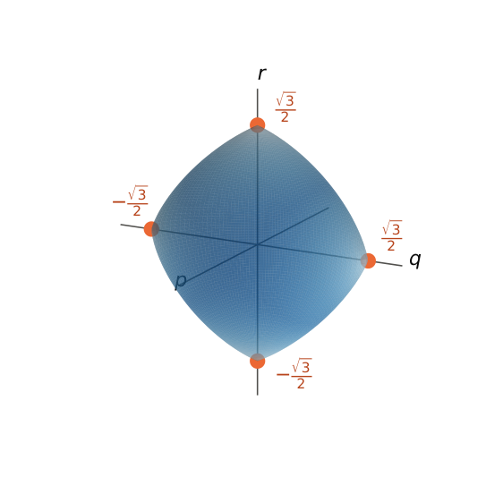

Rational sums-of-squares lengths of biquadratic forms and orthogonal dilations
At a glance
🚀 Start here: Theorem 8.1: integer length: degree at most two, and the exact count.
Main results:
- Theorem 4.1: length and defect as an embedding over Q(t)
- Theorem 4.2: period eight
- Proposition 4.4: order 5, defect 4, length 12
- Theorem 5.1: the rational criterion: a form hyperbolic over F(√(λ² − 1)) on each component
- Theorem 6.2: one interior eigenvalue: the rational length is decided by a positive subform of Ih making q ⊥ p hyperbolic over L
- Theorem 6.7: the excess as a finite local computation: signs at finitely many primes, h ≤ m + 3
- Theorem 6.9: excess 7 exactly: d_Q = 4 and a split prime with −D square and wᵥ(q) = −1
- Theorem 6.15: scalar dilations λIₘ: the exact rational length, period 2s and excess at most 4
- Theorem 7.1: Kₙ has rational length n exactly when n or n − 2 is a square
- Theorem 8.1: integer length: degree at most two, and the exact count
- Theorem 9.1: the smallest graph with a gap: √3 is forced
🗺️ Map of the results (click a box to go to it)
Dependencies in the written proof: an arrow A → B means that this proof of B uses A. Every result rests on its written proof; the tags record what was checked besides, and each statement's “Evidence & scope” block says how far. The colour of a box is its strongest tag, in the order above; the tags in the box give the rest. Boxes with a thick border are the main results; click a box to read the statement.
📐 Setting (copied from the paper, §§1–2)
Let \(H\) be a real symmetric \(n\times n\) matrix with spectrum in \([-1,1]\), and
For a subring \(R\subseteq \mathbb R\), \(\ell _R(H)\) is the least number of squares of bilinear forms with coefficients in \(R\) whose sum is \(P_H\). For a graph \(G\), \(\ell _R(G)=\ell _R(\tfrac 12A_G)\). We write \(H_n=(J-I)/(n-1)\) and \(\operatorname {sym}T=(T+T^{\top })/2\).
1 Introduction
For a subring \(R\subseteq {\mathbb {R}}\) with \(2H\) over \(R\), let \(\ell _R(H)\in \mathbb {N}\cup \{ \infty \} \) be the least \(r\) such that \(P_H\) is a sum of \(r\) squares of bilinear forms with coefficients in \(R\). For a graph \(G\) write \(\ell _R(G)=\ell _R(\tfrac 12 A_G)\).
↳ Not used by another result of the paper.
|
\(G\) |
\(\ell _{\mathbb {R}}\) |
\(\ell _{\mathbb {Q}}\) |
\(\ell _{\mathbb {Z}}\) |
|
cycle \(C_n\), \(n\ge 3\) |
\(n\) |
\(n\) |
\(n\) |
|
path \(P_n\), \(n\ge 2\) |
\(n+1\) |
\(n+1\) |
\(n+1\) |
|
\(P_2\sqcup K_1\) |
\(4\) |
\(5\) |
\(5\) |
|
\(P_2\sqcup P_2\) |
\(4\) |
\(6\) |
\(6\) |
|
\(K_{1,4}\) |
\(6\) |
\(6\) |
\(\infty \) |
|
\(C_4\sqcup K_1\) |
\(6\) |
\(6\) |
\(6\) |
|
\(H_5\) |
\(5\) |
\(8\) |
– |
|
\(H_7\) |
\(7\) |
\(12\) |
– |
Colour: blue shade = the number’s size within its column.
2 Two isometries
Huckel_SOS.represents_iff Let \(K\subseteq {\mathbb {R}}\) be a field, \(H\) symmetric over \(K\) of size \(n\ge 1\), and \(r\ge n\). The following are equivalent:
\(\ell _K(H)\le r\);
there are \(A,B\in K^{r\times n}\) with \(A^{\top }A=B^{\top }B=I\) and \(A^{\top }B+B^{\top }A=2H\);
there is \(T\in K^{n\times n}\) with \({\operatorname {sym}}T=H\) such that \(I-T^{\top }T=D^{\top }D\) for some \(D\in K^{(r-n)\times n}\).
In particular \(\ell _K(H)=n\) if and only if \(H={\operatorname {sym}}T\) with \(T\in O_n(K)\).
Isabelle · ours · partshow
Only a part is in Isabelle: partly: (1) ⇔ (2) over the reals (represents_iff); the rational case and (3) use Witt cancellation and are not formalized
represents_iff · Isabelle/AFP/Biquadratic_SOS_Length/Huckel_SOS.thy, line 85 — (1) ⇔ (2) over the reals
theorem represents_iff:
fixes A B :: "real^'n^'r" and H :: "real^'n^'n"
assumes symH: "sym_mat H"
shows "represents A B H \<longleftrightarrow>
transpose A ** A = mat 1 \<and> transpose B ** B = mat 1 \<and>
transpose A ** B + transpose B ** A = H + H"Trust base: 🔒 kernel only — only part of the statement is formal (see the box). Isabelle: 1 result, no oracles
↳ Used in: Proposition 2.3, Theorem 3.1, Proposition 3.2, Theorem 4.1, Theorem 5.1, Corollary 5.4, Theorem 6.2, Theorem 8.1, Theorem 9.1, 9.3, Proposition 10.1
A sum of \(r\) squares is \(|x_1Ay+x_2By|^2\), and comparing coefficients in (1) gives (2). Given (2), the space \(K^r\) with the standard form is the orthogonal sum of \(A(K^n)\cong n\langle 1\rangle \) and a complement which, by Witt cancellation, is isometric to \((r-n)\langle 1\rangle \). So we may take \(A=\binom {I}{0}\) and \(B=\binom {T}{D}\). The converse is the same computation.
The defect \(d_K(H)\) is the least rank of \(I-T^{\top }T\) over \(T\in K^{n\times n}\) with \({\operatorname {sym}}T=H\) and \(T^{\top }T\le I\).
↳ Not used by another result of the paper.
Huckel_SOS.det_pencil_square With \(M(t)=(1+t^2)I+2tH\): the cycle, \(n\ge 3\), gives \(\det M=(1-(-t)^n)^2\); the cycle with one negative bond gives \((1+(-t)^n)^2\); the path gives \(1+t^2+\dots +t^{2n}\), which is not a square for \(n\ge 1\).
↳ Not used by another result of the paper.
For the cycle, \(M=(I+tQ)^{\top }(I+tQ)\) with \(Q\) the cyclic shift, and \(\det (I+tQ)=\prod _{\zeta ^n=1}(1+t\zeta )\); the negative bond gives \(Q^n=-I\). For the path the levels are \(\cos (j\pi /(n+1))\), so the factors \((t+\omega ^j)(t+\omega ^{-j})\), with \(\omega =e^{i\pi /(n+1)}\), run over the \((2n+2)\)-th roots of unity except \(\pm 1\). If the result were \(p^2\), then \(p\) would divide \(G=t^{2n+2}-1\) and \(G'\), hence the nonzero constant \(tG'-(2n+2)G\).
🖼️ Figure 1

Roots of \(\det M(t)\). Double in both closed rings, simple on the path. Try your own graph in the lab.
3 Real length
Huckel_SOS.blocks_orthogonal, Huckel_SOS.blocks_symmetric_part Let \(H\) have spectrum in \([-1,1]\).
\(\ell _{\mathbb {R}}(H)=n\) if every eigenvalue in \((-1,1)\) has even multiplicity, and \(\ell _{\mathbb {R}}(H)=n+1\) otherwise.
Let \(Q\in O_{n+1}({\mathbb {R}})\) with \({\operatorname {sym}}Q=\bigl(\begin{smallmatrix} H & b \\ b^{\top } & c \end{smallmatrix}\bigr)\), and let \(\lambda \in (-1,1)\) have even multiplicity \(m\) in \(H\). Then \(b\) is orthogonal to the eigenspace \(E_\lambda \), and \(Q\) preserves it.
🆕 Classical and new: the length is due to Blekherman–Plaumann–Sinn–Vinzant and Hanselka–Sinn; the proof and the splitting are ours
↳ Used in: Proposition 3.3, Proposition 4.4, Corollary 5.4, 6.10
A real orthogonal matrix is a sum of plane rotations and \(\pm 1\), and a rotation of angle \(\theta \) gives \(\cos \theta \) twice in \({\operatorname {sym}}Q\). With Proposition 2.1, \(r=n\) forces parity, and conversely a parity spectrum is realized by rotation blocks.
Remove the even part and \(\pm 1\). There remain simple interior values \(\lambda _1{\gt}\dots {\gt}\lambda _s\). If \(s\) is odd take \(\mu =(\lambda _1,\lambda _1,\lambda _3,\lambda _3,\dots ,\lambda _s,\lambda _s)\), and if \(s\) is even take \(\mu =(1,\lambda _2,\lambda _2,\lambda _4,\lambda _4,\dots ,\lambda _s,\lambda _s)\). These \(s+1\) values interlace the \(\lambda _i\), \(\mu _1\ge \lambda _1\ge \mu _2\ge \dots \ge \lambda _s\ge \mu _{s+1}\), so by Fan–Pall [ 15 ] there is a symmetric matrix with spectrum \(\mu \) containing \(\operatorname {diag}(\lambda _i)\) as a principal block. Explicitly, the bordered matrix \(S=\bigl(\begin{smallmatrix} \operatorname {diag}(\lambda ) & b \\ b^{\top } & c \end{smallmatrix}\bigr)\) has \(\det (x-S)=(x-c)\prod _k(x-\lambda _k)-\sum _ib_i^2\prod _{k\ne i}(x-\lambda _k)\), so it suffices to take \(c=\sum \mu _j-\sum \lambda _i\) and \(b_i^2=-\prod _j(\lambda _i-\mu _j)/\prod _{k\ne i}(\lambda _i-\lambda _k)\), which is \(\ge 0\) by interlacing, with equality exactly when \(\lambda _i\) is one of the \(\mu _j\). The interior eigenvalues of \(S\) are paired and the remaining one, if any, is \(1\), so \(S={\operatorname {sym}}Q\) for an orthogonal \(Q\) of order \(s+1\) made of rotation blocks in an eigenbasis of \(S\); the direct sum with the removed part gives \({\operatorname {sym}}\) of an orthogonal matrix of order \(n+1\).
For (2): if \(b\not\perp E_\lambda \) then \(\lambda \) has multiplicity exactly \(m-1\) in \({\operatorname {sym}}Q\), which is odd. So \(b\perp E_\lambda \); the multiplicity is then \(m\), as \(m+1\) is also odd, and \(E_\lambda \) is an eigenspace of \({\operatorname {sym}}Q\), with which \(Q\) commutes.
🧪 Lab: Real length of your graph
Give a graph. The lab computes the levels of H and which ones go in pairs.
Huckel_SOS.chain_needs_more_than_n_squares, Huckel_SOS.geometric_not_square If \(H={\operatorname {sym}}T\) with \(T\) orthogonal and \(H\) has a cyclic vector, then \(H^2=I\). In particular no path on \(n\ge 2\) vertices has \(\ell _{\mathbb {R}}=n\).
↳ Not used by another result of the paper.
Let \(S=T-T^{\top }\). As \(TT^{\top }=T^{\top }T=I\), \(S\) commutes with \(H\). Then \(\langle H^ae,SH^be\rangle =\langle H^{a+b}e,Se\rangle \) is symmetric in \(a,b\), while \(S\) is skew. So it vanishes, \(S=0\), \(T=H\) and \(H^2=I\). On a path the first coordinate vector is cyclic, by the tridiagonal recurrence, and \(H^2\ne I\) for \(n\ge 2\).
Huckel_SOS.weighted_ring_identity Let \(S_a\) be the shift with \(S_ae_n=ae_1\) and \(H_a={\operatorname {sym}}S_a\), \(|a|\le 1\). Then \(M_a=(I+tS_a)^{\top }(I+tS_a)+(1-a^2)t^2e_ne_n^{\top }\), and \(\ell _{\mathbb {R}}(H_a)=n+1\) for \(|a|{\lt}1\), \(n\ge 3\), while \(\ell _{\mathbb {R}}(H_{\pm 1})=n\).
↳ Not used by another result of the paper.
The identity is a direct expansion. Let \(|a|{\lt}1\). A value \(\pm 1\) would force \(S_av=\pm v\), against \(S_a^n=aI\). A double value would have an eigenvector with \(v_1=0\), whose remaining coordinates form an eigenvector of a path on \(n-1\) vertices, with end entries nonzero and equal in modulus; the equation at site \(1\) reads \(v_2+av_n=0\), so \(|a|=1\). Now apply Theorem 3.1.
🧪 Lab: Loosen the bond
Move the weight of the closing bond. The extra square switches off only at a = ±1.
4 A global criterion
Let \(H\) be rational symmetric with spectrum in \([-1,1]\), and \(p\) a positive definite rational form, possibly zero. The following are equivalent:
there is a rational contraction \(T\) with \({\operatorname {sym}}T=H\) whose nondegenerate defect form embeds in \(p\);
\((M_H)_F\) embeds in \((I_n\perp p)_F\).
In particular \(\ell _{\mathbb {Q}}(H)=\min \{ r:(M_H)_F\hookrightarrow (I_r)_F\} \), and \(d_{\mathbb {Q}}(H)\) is the least dimension of a positive \(p\) satisfying (2).
🆕 Classical and new: applies the Harder and Gerstein lattice argument to the normalized pencil
↳ Used in: Theorem 4.2, Proposition 4.4, 6.16
Let \(Q_0=I_n\perp p\), of dimension \(N\), write \(R={\mathbb {Q}}[t]\) and let \(\Lambda _0=R^N\) be its constant lattice, which is unimodular. A lattice is a finitely generated \(R\)-submodule of \(F^N\) of rank \(N\), and it is integral if the form takes values in \(R\) on it. Suppose \(v_1,\dots ,v_n\in F^N\) have Gram matrix \(M_H\).
Step 1: a maximal lattice. Since \(\det M_H\ne 0\), the \(v_i\) span a nondegenerate subspace; adding a basis of its orthogonal complement, scaled to make the Gram matrix polynomial, gives an integral lattice \(N_0\ni v_1,\dots ,v_n\). Its dual \(N_0^{\# }=\{ x\in F^N: Q_0(x,N_0)\subseteq R\} \) is again a lattice, since the Gram matrix of \(N_0\) is invertible over \(F\). An integral lattice \(L\supseteq N_0\) satisfies \(L\subseteq L^{\# }\subseteq N_0^{\# }\), so the integral lattices containing \(N_0\) are submodules of the finitely generated module \(N_0^{\# }\) over the noetherian ring \(R\), and every ascending chain of them stabilizes: there is a maximal integral lattice \(L\supseteq N_0\).
Step 2: its local shape. Let \(\pi \) be a prime of \(R\), \(k_\pi =R/\pi \) and \(L_\pi \) the completion of \(L\) over the completed ring \(\hat R_\pi \). As \(2\) is a unit, \(L_\pi \) has an orthogonal basis; grouping its vectors by the valuation of their norms, \(L_\pi =U\perp \pi V\perp W'\), where \(U\) and \(V\) are unimodular, \(\pi V\) denotes \(V\) with its form multiplied by \(\pi \), and every basis vector of \(W'\) has norm of valuation at least \(2\). An integral lattice can be changed at one prime and kept at the others: if \(L''\supsetneq L_\pi \) is an integral \(\hat R_\pi \)-lattice with \(L''\subseteq \pi ^{-k}L_\pi \), then, viewing \(\pi ^{-k}L\) inside \(F_\pi ^N\), \(L'=\pi ^{-k}L\cap L''\) is an \(R\)-lattice with \(L'_\pi =L''\) and \(L'_\rho =L_\rho \) for \(\rho \ne \pi \), as \(\pi \) is a unit at \(\rho \); it is integral because integrality is checked prime by prime, \(R=\bigcap _\rho R_{(\rho )}\). (This is the usual local–global correspondence for lattices over a Dedekind domain [ 26 ] ; \(L'\) is a global lattice by construction, not merely a completed one.) So maximality of \(L\) gives maximality of \(L_\pi \). If \(W'\ne 0\), a basis vector \(e\) of \(W'\) can be replaced by \(e/\pi \), whose norm still lies in \(\hat R_\pi \) and which is orthogonal to the other basis vectors; the new lattice is integral and strictly larger, so \(W'=0\). If \(\bar V\) is isotropic, take \(v\in V\) primitive with \(b_V(v,v)\in \pi \hat R_\pi \), where \(b_V\) is the unimodular form of \(V\), so that the vector \(x=v\) of the summand \(\pi V\) has norm \(\pi b_V(v,v)\in \pi ^2\hat R_\pi \). Then \(x/\pi \) has norm \(b_V(v,v)/\pi \in \hat R_\pi \), it is orthogonal to \(U\), and its product with \(w\in \pi V\) is \(b_V(v,w)\in \hat R_\pi \). So \(L_\pi +\hat R_\pi \, x/\pi \) is integral, and strictly larger since \(v\) is primitive. So \(\bar V\) is anisotropic.
Step 3: \(V=0\). By Springer’s theorem over the complete field \(F_\pi \) [ 21 , Ch. VI ] , the second residue of \(L_\pi \otimes F_\pi \) is the class \([\bar V]\in W(k_\pi )\), and it depends only on the space. The same space contains the unimodular lattice \(\Lambda _0\), whose second residue is \(0\). So \([\bar V]=0\), and since \(\bar V\) is anisotropic, \(\bar V=0\): an anisotropic form with zero Witt class has dimension zero. Hence \(V=0\) and \(L\) is unimodular at every prime, that is, unimodular over \(R\). (Metabolic residues cannot occur, because maximality has already made \(\bar V\) anisotropic.)
Step 4: \(L\) is constant. We use the theorem of Harder and Djoković in the form [ 16 , Theorem 1.11 ] : every symmetric matrix in \(\mathrm{GL}_N({\mathbb {Q}}[t])\) is congruent over \({\mathbb {Q}}[t]\) to a matrix with rational entries. By Step 3 the Gram matrix of \(L\) in any \(R\)-basis (one exists, as \(R\) is a principal ideal domain) is symmetric with determinant a unit of \(R\), that is, it lies in \(\mathrm{GL}_N(R)\). So \(L\) has an \(R\)-basis with constant Gram matrix \(Q_1\). The constant forms \(Q_0,Q_1\) are isometric over \(F\); specializing an isometry at a rational \(t_0\) where it and its inverse are defined shows \(Q_1\cong Q_0\) over \({\mathbb {Q}}\). Composing, there is an isometry \(\varphi \) of \((Q_0)_F\) with \(\varphi (L)=\Lambda _0\), and the vectors \(\varphi (v_i)\) are polynomial.
Step 5: degree one. In a rational basis diagonalizing \(Q_0\) with positive coefficients \(c_k\), the norm \(\sum _kc_kw_k(t)^2\) of a polynomial vector \(w\ne 0\) has degree \(2\max _k\deg w_k\), since the leading terms cannot cancel. The diagonal of \(M_H\) has degree two, so the matrix of the \(\varphi (v_i)\) is \(A_0+tB_0\), and comparing coefficients in \((1+t^2)I+2tH\) gives \(A_0^*A_0=B_0^*B_0=I\) and \(A_0^*B_0+B_0^*A_0=2H\), with \({}^*\) the adjoint for \(Q_0\). By Witt’s theorem \(A_0\) may be taken to be the inclusion of \(I_n\); then \(B_0=\binom {T}{D}\) with \({\operatorname {sym}}T=H\) and \(I-T^{\top }T=D^*D\), whose nondegenerate part is the restriction of \(p\) to the image of \(D\), so it embeds in \(p\). This is (1). Conversely, given (1), an embedding of the defect form in \(p\) gives \(D\) with \(D^*D=I-T^{\top }T\), and the columns of \(\binom {I}{0}+t\binom {T}{D}\) have Gram matrix \(M_H\). For the length take \(p=I_{r-n}\): a polynomial matrix of degree one with Gram matrix \(M_H\) in \(I_r\) is a representation of \(P_H\) by \(r\) squares.
💡 In plain words (commentary, not part of the paper)
Asking for rational squares of bilinear forms looks like a problem about two matrices. It is really one embedding of quadratic forms over the field of rational functions: the pencil \(M_H(t)\) must fit inside a sum of unit squares. A rational embedding can have denominators, but a lattice argument clears all of them at once.
For rational symmetric \(H,K\) with spectrum in \([-1,1]\), with \(H\) of order \(n\),
Eight is the least integer with this property for all \(H\).
🆕 Classical and new: not found in the literature so far; not a proof of novelty
↳ Not used by another result of the paper.
In a totally imaginary number field \(L\), \(I_5\) is isotropic by Hasse–Minkowski, so \(-1\) is a sum of four squares, and a quaternion of norm \(-1\) gives \(I_4\cong -I_4\). Thus \(I_8\) is hyperbolic over each \(L_p\), and Theorem 5.1 below gives \(\ell _{\mathbb {Q}}(H^{\oplus 8})=8n\). So there is \(T\in O_{8n}({\mathbb {Q}})\) with \({\operatorname {sym}}T=H^{\oplus 8}\), whence \(M_{H^{\oplus 8}}=(I+tT)^{\top }(I+tT)\cong (I_{8n})_F\). Witt cancellation and Theorem 4.1 give both equalities. For minimality take \(H=(\frac34)\) and \(L={\mathbb {Q}}(\sqrt{-7})\). Here \([I_8]_L=0\) and \([I_4]_L\ne 0\), so \(\langle 1\rangle \) has order exactly \(8\) in \(W(L)\), and by Proposition 4.3 \(d_{\mathbb {Q}}(H^{\oplus e})=0\) only for \(8\mid e\). So every universal period is a multiple of \(8\).
💡 In plain words (commentary, not part of the paper)
Eight copies of a block cost nothing extra: they are always a rational rotation. The reason is that \(-1\) is a sum of four squares in every totally imaginary number field. So repeating a block never makes the excess grow.
For \(\lambda \in (-1,1)\) rational and \(L={\mathbb {Q}}(\sqrt{\lambda ^2-1})\), \(d_{\mathbb {Q}}(\lambda I_n)\) is the dimension of the anisotropic part of \((I_n)_L\). For instance \(d_{\mathbb {Q}}(\frac34I_4)=4\).
↳ Used in: Theorem 4.2, Theorem 6.15
Here \(T=\lambda +S\) commutes with \(H\), and with \(\delta =1-\lambda ^2\), \(\Delta =\delta +S^2\) we have \({\mathbb {Q}}^n=\ker \Delta \perp W\). The kernel is a sum of planes \(\langle a,a\delta \rangle \), hyperbolic over \(L\), so \(\dim W\) is at least the anisotropic dimension. Conversely, extract such planes until the rest is anisotropic, and take \(S=0\) on the rest. Finally, for \(\lambda =\frac34\), \(L={\mathbb {Q}}(\sqrt{-7})\) has a place over \(2\) with completion \({\mathbb {Q}}_2\), where \(I_4\) is anisotropic: no primitive solution exists modulo \(8\).
Rational_Gap.witness_G For \(G=\operatorname {diag}(\frac14,\frac14,\frac14,\frac14,-\frac12)\): \(\ell _{\mathbb {R}}(G)=6\), \(d_{\mathbb {Q}}(G)=4\) and \(\ell _{\mathbb {Q}}(G)=12\).
🆕 Classical and new: not found in the literature so far; not a proof of novelty
↳ Used in: 1
The real length follows from Theorem 3.1. For the upper bounds, \(T=G\) has defect \(\frac{15}{16}I_4\perp \langle \frac34\rangle \), and \(\frac{15}{16}I_4\cong I_4\) by a quaternion of norm \(\frac{15}{16}\), while \(\frac34\) is a sum of three squares. So \(\ell _{\mathbb {Q}}\le 5+4+3\). For the defect take
Since \(\| v\| ^2=\frac38=(1-\frac14)(1-\frac12)\), a computation gives that \(I-T^{\top }T\) has spectrum \(\{ 0,(\frac{15}{16})^{[4]}\} \), so \(T\) is a contraction of defect \(4\).
For the lower bounds let \(a=t^2+\frac t2+1\) and \(b=t^2-t+1\), so \(M_G=aI_4\perp \langle b\rangle \). Since \(3\) is a root of \(u^2+u+4\) modulo \(8\) with odd derivative, Hensel gives a root \(u\in {\mathbb {Z}}_2\) with \(u\equiv 3\pmod8\). Put \(\theta =u/2\). Then \(a(\theta )=0\), and \(-b(\theta )=3u/4\) is a square in \({\mathbb {Q}}_2\) because \(3u\equiv 1\pmod8\). Over \({\mathbb {Q}}_2((t-\theta ))\), \(a\) has valuation one, as \(a'(\theta )=u+\frac12\ne 0\), and \(b\) is a unit, so Springer’s theorem gives the residues
|
cabezawhiteform |
whitefirst residue |
whitesecond residue |
|
\(I_r\), \(p\) (constant) |
\([I_r]\), \([p]\) |
\(0\) |
|
\(aI_4\) |
\(0\) |
\([a'(\theta )I_4]=[I_4]\) |
|
\(\langle b\rangle \) |
\([\langle b(\theta )\rangle ]=[\langle -1\rangle ]\) |
\(0\) |
using that every scalar multiple of \(I_4\) over \({\mathbb {Q}}_2\) is isometric to \(I_4\), the norm form of the quaternion division algebra, whose norm is surjective. The anisotropic dimension of a form is the sum of those of its two residues. A complement \(B\) of \(M_G\) in \(I_5\perp p\) has second residue \(-[I_4]\), anisotropic of dimension \(4\) over \({\mathbb {Q}}_2\), so \(\dim B\ge 4\) and \(d_{\mathbb {Q}}(G)\ge 4\) by Theorem 4.1. If \(\ell _{\mathbb {Q}}(G)\le 11\), a complement in \(I_{11}\) has rank \(6\), the same second residue, and first residue \([I_{11}]-[\langle -1\rangle ]=[I_{12}]=[I_4]\), since \(I_8\) is a Pfister form of dimension \(8{\gt}u({\mathbb {Q}}_2)=4\), hence isotropic and so hyperbolic. Its anisotropic dimension would be \(4+4=8{\gt}6\), a contradiction.
💡 In plain words (commentary, not part of the paper)
Five variables, and three different numbers: real length \(6\), rational Gram rank \(9\), rational length \(12\). The Gram matrix only needs a form of rank four, but writing that form as honest rational squares costs three more.
Let \(E_1=\langle e_1,e_2,e_3,e_4\rangle \) and \(E_2=\langle e_5,e_6,3e_7+e_8+e_9,-e_7+3e_8+e_{10}\rangle \) in \({\mathbb {Q}}^{10}\), and let \(H\) be \(\frac34\) on \(E_1\), \(\frac{57}{64}\) on \(E_2\) and \(1\) on the complement. Then \(d_{\mathbb {Q}}(H)=6\), while each component has anisotropic dimension \(4\).
↳ Used in: 2
The blocks are \(q_1=I_4\) and \(q_2=\langle 1,1,11,11\rangle \), and both levels have residue field \(L={\mathbb {Q}}(\sqrt{-7})\), as \(1-(\frac{57}{64})^2=7(\frac{11}{64})^2\). For \(d\le 6\) add to \(H\) the skew blocks of upper entry \(\frac7{16}\) on the pairs \((e_1,e_5)\) and \((e_2,e_6)\): each pair has a positive defect block of rank one, and four interior directions remain.
Suppose \(d\le 5\). Then \(I_{10}\perp C\cong M_H\perp B\) over \(F\) with \(C\) constant positive of rank \(5\) and \(\dim B=5\), and \(\det B\sim c=\det C\) since \(\det M_H\) is a square. Let \(f_1,f_2\) be the two quadratic factors. At \(f_i\), the odd residue of \(B\) is \([-q_i]\), anisotropic of dimension \(4\) over \(L\): for \(q_1\) at a place over \(2\) with completion \({\mathbb {Q}}_2\), and for \(q_2\) at a place over \(11\), where \(-7\equiv 4\) is a square. So \(B\) has an even line of class \(\langle c\rangle \) at \(f_i\), and \(\eta =\langle f_1f_2\rangle ([B]-[\langle c\rangle ])\) has zero second residues everywhere. By Milnor’s exact sequence [ 30 , Theorem 5.3 ] , \(\eta =[\eta _0]\) for some \(\eta _0\in W({\mathbb {Q}})\). Its first residue at \(f_i\) is then \(\eta _0\otimes k_{f_i}\), while by construction it is \(\bar f_{3-i}\) times the second residue of \(-[M_H]\) there, a scalar multiple \(\alpha _iq_i\) over \(k_{f_i}\cong L\). Both \(k_{f_i}\) have a place over \(2\) with completion \({\mathbb {Q}}_2\), and \(\eta _0\) is defined over \({\mathbb {Q}}\), so \(\eta _0\otimes {\mathbb {Q}}_2\cong \alpha _1q_1\cong \alpha _2q_2\) in \(W({\mathbb {Q}}_2)\). But \(\alpha _1q_1=\alpha _1I_4\) is anisotropic, and \(q_2=\langle \langle -1,-11\rangle \rangle \) is hyperbolic over \({\mathbb {Q}}_2\), as \(-11=2^2+(\sqrt{-15})^2\) there. This is a contradiction.
There is a rational diagonal matrix \(H\) with interior eigenvalues and \(d_{\mathbb {Q}}(H)\ge 7\).
↳ Not used by another result of the paper.
Let \(\rho _1,\dots ,\rho _k\) be the even classes of \(W({\mathbb {Q}}_2)\), each with a representative of rank \(8\). Choose distinct rationals \(a_i\in (-1,1)\) close to \(\frac34\) in \({\mathbb {Q}}_2\), so that \(f_{a_i}=t^2+2a_it+1\) has a simple root \(\theta _i\in {\mathbb {Q}}_2\). For each \(i\) put on the diagonal four copies of \(a_i\) and eight rationals \(b_{ij}\in (-1,1)\) with \(\sum _j[\langle f_{b_{ij}}(\theta _i)\rangle ]=\rho _i\) and \(f_{b_{ij}}(\theta _l)\sim f_{a_i}(\theta _l)\) for \(l\ne i\). This is possible: since \(f_{a_i}(\theta _i)=0\), \(f_b(\theta _i)=2\theta _i(b-a_i)\), so the first condition asks \(b-a_i\) to lie in one square class of \({\mathbb {Q}}_2\), an open set containing elements of arbitrarily large valuation; the second is an open condition at \(b=a_i\), because \(f_{a_i}(\theta _l)\ne 0\) for \(l\ne i\) (the roots of \(f_a\) are \(\theta ,\theta ^{-1}\) and determine \(a\)). So for each \(j\) the admissible \(b\) form a nonempty open subset of \({\mathbb {Q}}_2\) accumulating at \(a_i\), and \({\mathbb {Q}}\) is dense in \({\mathbb {Q}}_2\times {\mathbb {R}}\), so we can take \(b_{ij}\) rational, distinct and in \((-1,1)\). The \(a_i\) exist for the same reason: \(f_a\) has a simple root in \({\mathbb {Q}}_2\) as long as \(a^2-1\) is a nonzero square there, which holds at \(a=\frac34\) (\(a^2-1=-\frac7{16}\)) and so near it. The number \(k\) of classes is finite, as \(W({\mathbb {Q}}_2)\) has order \(32\). If \(d\le 6\), there are a constant \(C\) and a complement \(B\) of rank \(6\) with \([B]=[I_{12k}]+[C]-[M_H]\). Choose \(i\) with \([C_{{\mathbb {Q}}_2}]=\rho _i\) and work in \({\mathbb {Q}}_2((t-\theta _i))\). The odd residue is a multiple of \(I_4\). The even one is \([I_{12k}]+\rho _i-(k-1)[I_4]-\rho _i=[I_4]\), since scalar multiples of \(I_4\) over \({\mathbb {Q}}_2\) are isometric and \(I_8\) is hyperbolic. So \(\dim B\ge 8\), a contradiction.
5 Length \(n\) and \(n+1\)
\(\ell _{\mathbb {Q}}(H)=n\) if and only if \(h_p\otimes L_p\) is hyperbolic for every \(p\neq x\mp 1\).
🆕 Classical and new: a componentwise reading of the Milnor--Husemoller and Lewis exact sequence; same forms as Friedland 1993, for a different question
↳ Used in: Theorem 4.2, Proposition 4.3, 5.2, 5.3, Theorem 5.5, 5.6, Theorem 6.2, Theorem 7.1, Proposition 7.2, 9.6, 10.3
Suppose \(H={\operatorname {sym}}T\) with \(T\in O_n({\mathbb {Q}})\). Then \(T\) commutes with \(H\) and preserves each \(V=V_p\), on which \(T^2-2\lambda T+1=0\). By trace nondegeneracy, \(h(Tu,Tv)=h(u,v)\). Put \(\omega =T-\lambda \). Then \(\omega ^2=\lambda ^2-1\), \(\omega \) is skew for \(h\), and \(h(\omega u,\omega v)=(1-\lambda ^2)h(u,v)\). For \(u\) with \(h(u,u)\ne 0\), the plane \(\langle u,\omega u\rangle \) is \(\omega \)-stable and isometric to \(h(u,u)\langle 1,1-\lambda ^2\rangle \). By induction on the orthogonal complement, \(h\cong \langle 1,1-\lambda ^2\rangle \otimes g\), which is hyperbolic over \(L_p\).
Conversely, let \(h\otimes L_p\) be hyperbolic. The form \(h\) is definite at each real place of \(F\), because the trace form is positive, so it is anisotropic. An isotropic vector \(v+w\sqrt{\lambda ^2-1}\) of \(h\otimes L_p\) then gives \(h(v,w)=0\) and \(h(v,v)=(1-\lambda ^2)h(w,w)\ne 0\), and this plane splits off [ 24 , Lemma 1 ] . By induction \(h\cong \langle 1,1-\lambda ^2\rangle \otimes g\), and the proof is effective once isotropic vectors are found. On a plane with orthogonal basis \(u,v\) and \(h(v,v)=(1-\lambda ^2)h(u,u)\) put \(Tu=\lambda u+v\) and \(Tv=-(1-\lambda ^2)u+\lambda v\). This \(T\) is an \(F\)-linear isometry with \(T+T^{-1}=2\lambda \). Put \(T=\pm 1\) on \(V_{x\mp 1}\) and add up.
💡 In plain words (commentary, not part of the paper)
A rational rotation of cosine \(\lambda \) cannot live on just any plane: the plane must have the right discriminant, \(1-\lambda ^2=\sin ^2\theta \). The theorem says this is the only obstruction. Each eigenspace must be built out of such planes, which is the same as saying that its form becomes hyperbolic once \(\sqrt{\lambda ^2-1}\) is adjoined. That can be tested prime by prime. The language is classical (Milnor–Husemoller, Lewis): what is specific here is that \(H\) dictates the extension on each component.
🧪 Lab: The local test, prime by prime
Give a level λ and a diagonal rational form on its eigenspace. The lab applies the discriminant and Hasse tests.
A rational rotation with \(\cos \theta =\lambda \) lives on a plane of discriminant class \(1-\lambda ^2=\sin ^2\theta \). A plane of class \(d\) needs the root \(\sqrt{d(1-\lambda ^2)}\). This is \(\sin \theta \) up to a rational factor only when \(d\) is a square: for \(\langle 1,2\rangle \) and \(\lambda =\frac12\) the root is \(\sqrt6\), not \(\sqrt3\).
↳ Not used by another result of the paper.
In Lewis’s Corollary [ 24 ] a form is the underlying form of a hermitian form over a quadratic extension if and only if it has even dimension \(2r\), becomes hyperbolic, and has the determinant \((-a)^r\). Here \(h\) is anisotropic, so the extraction of planes forces the determinant. Theorem 5.1 says that \(\ell _{\mathbb {Q}}(H)=n\) if and only if each \(h_p\) is the underlying form of a hermitian form over \(L_p/F\). Compare also [ 4 , Proposition 3.6 ] . The condition \(T+T^{-1}=2\lambda \) says that \(T\) has minimal polynomial \(x^2-2\lambda x+1\) over \(F_p\), so [ 4 , Corollary 9.2 ] applies on each component, and its determinant condition is the one above.
↳ Not used by another result of the paper.
Real_Jump_Locale.cor_jump If \(\ell _{\mathbb {R}}(H)=n\) and \(\ell _{\mathbb {Q}}(H)\le n+1\), then \(\ell _{\mathbb {Q}}(H)=n\).
Isabelle · ours · partshow
Only a part is in Isabelle: Witt cancellation over Q is the only named assumption (locale witt_over_Q)
cor_jump · Isabelle/RealJump/Real_Jump_Locale.thy, line 902 — the jump corollary (locale witt_over_Q)
theorem (in witt_over_Q) cor_jump:
fixes H :: "real^'a^'a"
assumes real_n: "\<exists>T0. orth_mat T0 \<and> sympart T0 = H"
and rat_n1: "\<exists>A B::real^'a^('a option). rational_mat A \<and> rational_mat B \<and> rep_mat A B H"
shows "\<exists>T. rational_mat T \<and> orth_mat T \<and> sympart T = H"real_part2 · Isabelle/RealJump/Real_Jump_Locale.thy, line 679 — Theorem real (2)
theorem real_part2: assumes l: "l\<^sup>2 < 1" and ev: "even (dim (Eh l))" and v: "v \<in> Eh l" shows "bv \<bullet> v = 0" and "\<exists>w\<in>Eh l. Q *v emb v = emb w"
Trust base: 🔒 kernel only — only part of the statement is formal (see the box). Isabelle: 2 results, no oracles
🆕 Classical and new: not found in the literature so far; not a proof of novelty
↳ Used in: Theorem 5.5, 5.6, 9.4
Take \(T\) and \(D\) over \({\mathbb {Q}}\) as in Proposition 2.1 with \(r=n+1\). The complement of the columns of \(\binom {T}{D}\) in \({\mathbb {Q}}^{n+1}\) is \(\langle 1\rangle \) by Witt cancellation, so they extend to \(Q\in O_{n+1}({\mathbb {Q}})\). By Theorem 3.1, \(Q\) preserves each interior eigenspace of \(H\), hence their sum \(V\), which is defined over \({\mathbb {Q}}\) as the kernel of a factor of the characteristic polynomial. Then \(Q|_V\) is rational orthogonal with symmetric part \(H|_V\). On \(V^\perp \subseteq {\mathbb {Q}}^n\) we have \(H^2=I\), so \(T'=Q|_V\oplus H|_{V^\perp }\) gives \(\ell _{\mathbb {Q}}(H)=n\).
For rational \(H\) it is decidable whether \(\ell _{\mathbb {Q}}(H)\le n+1\). More precisely, let \(f\) be the characteristic polynomial of \(H\). There are at most two monic \(g\in {\mathbb {R}}[X]\) of degree \(n+1\) whose roots lie in \([-1,1]\), interlace those of \(f\), have even multiplicity in \((-1,1)\) and keep the multiplicities of \(\pm 1\) in \(f\) from dropping. Then \(\ell _{\mathbb {Q}}(H)\le n+1\) if and only if, for one such \(g\) with rational coefficients:
writing \(g/f=X-c-\sum _p\operatorname{Tr}_{F_p/{\mathbb {Q}}}\bigl(w_p/(X-\lambda _p)\bigr)\), each \(h_p\) represents \(w_p\) over \(F_p\), by some \(b_p\), with \(w_p=0\) for \(p=x\mp 1\);
the bordered matrix \(S=\bigl(\begin{smallmatrix} H & b \\ b^{\top } & c \end{smallmatrix}\bigr)\), \(b=\sum _pb_p\), has \(\ell _{\mathbb {Q}}(S)=n+1\).
The outcome of (2) does not depend on the choice of the \(b_p\). All steps are effective: real algebraic numbers are isolated, the rationality of the candidates is tested exactly, representations are decided by local invariants, and a representing vector is then found by enumeration.
🆕 Classical and new: not found in the literature so far; not a proof of novelty
↳ Not used by another result of the paper.
For the mere decision there is a shorter route. With \(D=\det M_H\), the complement of an embedding in \(I_{n+1}\) is a line of class \(\langle D\rangle \), so \(\ell _{\mathbb {Q}}(H)\le n+1\) if and only if \(M_H\perp \langle D\rangle \cong I_{n+1}\) over \(F\). The second residues at the factors of \(D\) are effective over number fields, and a class with zero residues is constant [ 30 , Theorem 5.3 ] , hence zero by specialization at \(t=0\). If moreover \(\ell _{\mathbb {R}}(H)=n\), then \(D\) is a square in \({\mathbb {Q}}[t]\), and cancellation gives Corollary 5.4 again. The proof below gives more: the possible characteristic polynomials of the bordered matrix, the border itself, and so explicit witnesses.
↳ Not used by another result of the paper.
As in Corollary 5.4, \(\ell _{\mathbb {Q}}(H)\le n+1\) means \(S={\operatorname {sym}}Q\) with \(Q\in O_{n+1}({\mathbb {Q}})\) for some border \(b,c\). Let \(g\) be the characteristic polynomial of \(S\), and for \(x\in {\mathbb {R}}\) let \(N_f(x)\), \(N_g(x)\) count the roots, with multiplicity, that are \({\gt}x\). Cauchy interlacing says exactly that \(e(x)=N_g(x)-N_f(x)\in \{ 0,1\} \) for all \(x\). Interior roots of \(g\) have even multiplicity, as \(S={\operatorname {sym}}Q\). Within an open interval free of roots of \(f\), \(e\) can only grow by one, so such an interval contains at most one simple root of \(g\), which must then be \(\pm 1\). Now let \(x\) decrease from above \(1\), where \(e=0\), and record \(m=m_f(\nu )\), \(m'=m_g(\nu )\) and the jump \(e\mapsto e+m'-m\) at each value \(\nu \):
|
cabezawhitevalue \(\nu \) |
whitebefore |
white\(m'=m_g(\nu )\) |
whiteafter |
|
\(\nu =1\) |
\(e=0\) |
\(m\) or \(m+1\) (the free bit) |
\(e=m'-m\) |
|
interior, \(m\) even |
\(e\) |
\(m\) (as \(m\pm 1\) is odd) |
\(e\) |
|
interior, \(m\) odd |
\(e=0\) |
\(m+1\) (as \(m-1\) would give \(e=-1\)) |
\(1\) |
|
interior, \(m\) odd |
\(e=1\) |
\(m-1\) (as \(m+1\) would give \(e=2\)) |
\(0\) |
|
\(\nu =-1\) |
\(e\) |
\(m+1-e\) (degree \(n+1\)) |
\(1\) |
Here \(m\) may be \(0\) at \(\pm 1\), and the condition that \(\pm 1\) do not lose multiplicity is \(m'\ge m\) in the first and last rows. Every row except the first has exactly one entry, so \(g\) is determined by the bit at \(+1\), which gives at most two candidates.
The Schur complement gives \(g/f=X-c-\langle b,(X-H)^{-1}b\rangle \), and the primary decomposition turns the last term into \(\sum _p\operatorname{Tr}\bigl(h_p(b_p,b_p)/(X-\lambda _p)\bigr)\). So \(g\) determines \(c\) and \(w_p=h_p(b_p,b_p)\). If \(\lambda _p=\pm 1\) then the quadratic form of \(I\mp S\ge 0\) vanishes on \(V_p\), so the operator does too, hence \(b_p=0\). Whether \(h_p\) represents \(w_p\) is decided by Hasse–Minkowski over \(F_p\), and a representing vector is then found by enumeration. Two vectors of equal nonzero norm are conjugate under \(O(h_p)\) by Witt’s theorem. Such isometries commute with \(H\) and are rational orthogonal for the trace form, so they conjugate the two borders, and \(\ell _{\mathbb {Q}}(S)\) does not change. Finally (2) is decided by Theorem 5.1.
6 One interior eigenvalue
A positive rational form \(p\) of dimension \(d\) embeds in \(I_{d+3}\). (This is the case \(A={\mathbb {Q}}\) of [ 2 , Lemma 8.1 ] ; we include the short proof.)
↳ Used in: Theorem 6.2, Lemma 6.4, 10.3
Let \(D=\det p\). Prescribe a ternary positive form \(b\) of determinant \(D\) with \(w_v(b)=w_v(p)(D,D)_v\) at every \(v\). Ternary forms realize both Hasse invariants, and \(\prod _vw_v(p)(D,D)_v=1\) by Hilbert reciprocity, so \(b\) exists. Then \(p\perp b\) and \(I_{d+3}\) have the same local invariants, as \(w(p\perp b)=w(p)w(b)(D,D)\), and they are isometric by Hasse–Minkowski.
Lengths_One_Core.factor_transpose, Lengths_One_Core.range_dim_parity For \(h\ge 0\), \(\ell _{\mathbb {Q}}(H)\le n+h\) if and only if some positive definite subform \(p\) of \(I_h\) makes \((q\perp p)_L\) hyperbolic. The defect \(d_{\mathbb {Q}}(H)\) is the least dimension of a positive rational form \(p\) with \((q\perp p)_L\) hyperbolic. In particular \(\ell _{\mathbb {Q}}(H)\le n+m+3\).
↳ Used in: 6.3, Proposition 6.5, Theorem 6.7, Corollary 6.8, Theorem 6.9, Theorem 6.15, 10.2
Let \(\ell _{\mathbb {Q}}(H)\le n+h\), and take \(T,D\) as in Proposition 2.1, \(D:{\mathbb {Q}}^n\to {\mathbb {Q}}^h\). For \(v\) in \(E_\pm =\ker (H\mp 1)\) we have \(\langle Tv,v\rangle =\pm |v|^2\) and \(|Tv|^2+|Dv|^2=|v|^2\), so \(Tv=\pm v\) and \(Dv=0\) by Cauchy–Schwarz, and \(T^{\top }v=2Hv-Tv=\pm v\). So \(T\) preserves \(V\), and \(T|_V=\lambda +S\) with \(S\) skew. Put \(\Delta =\delta +S^2=D^{\top }D|_V\), a polynomial in \(S\); so \(U=\ker \Delta \) and \(W=\operatorname {im}\Delta \) are rational, orthogonal and \(S\)-stable. On \(U\) we have \(S^2=-\delta \). For \(x\in U\) the vectors \(x\) and \(Sx\) are orthogonal, as \(S\) is skew, and \(q(Sx,Sx)=-q(S^2x,x)=\delta q(x,x)\); so \(x,Sx\) span an \(S\)-stable plane \(\langle a,a\delta \rangle \), \(a=q(x,x)\), whose orthogonal complement in \(U\) is again \(S\)-stable. By induction \(q_U\) is a sum of such planes, each hyperbolic over \(L\), where \(-\delta \) is a square; and the residual form \(r=q(\Delta \cdot ,\cdot )|_W\) is isometric to \(p=D(W)\subseteq I_h\). With \(\iota ^2=-\delta \) in \(L\), \(q((\iota +S)x,(\iota +S)y)=-q(\Delta x,y)\), and \(\iota +S\) is invertible on \(W_L\) because \((\iota -S)(\iota +S)=-\Delta \) is. So \(q_{W,L}\cong -r_L\) and \((q\perp p)_L\) is hyperbolic. Here \(\dim p=\operatorname{rank}D\) is exactly the defect of this \(T\).
Conversely, \(q\perp p\) is positive, hence anisotropic, and hyperbolic over \(L\), so the extraction in Theorem 5.1 writes it as a sum of planes \(\langle a,a\delta \rangle \) and gives an isometry \(R\) of \(q\perp p\) with \({\operatorname {sym}}R=\lambda \). Extend \(R\) by \(\pm 1\) on \(E_\pm \) and by the identity on \(p^{\perp }\subseteq I_h\), and compress to the first \(n\) coordinates. This gives \(\ell _{\mathbb {Q}}(H)\le n+h\) by a contraction whose defect is at most \(\dim p\). For the defect statement \(p\) need not lie in a given \(I_h\), by Lemma 6.1. Finally \(T=H\) has defect form \(\delta q\) on \(V\), of dimension \(m\), which embeds in \(I_{m+3}\) by Lemma 6.1.
💡 In plain words (commentary, not part of the paper)
With one interior eigenvalue \(\lambda \), the squares needed beyond the first \(n\) are a positive form \(p\) sitting inside \(h\) unit squares. The theorem says exactly what \(p\) must do: together with the eigenspace form \(q\), it must become hyperbolic over the quadratic field \(L={\mathbb {Q}}(\sqrt{-\delta })\), \(\delta =1-\lambda ^2\). So the rational length is the size of the smallest sum of unit squares that contains such a \(p\); and since every positive form of dimension \(b\) fits in \(b+3\) squares, at most \(m+3\) extra squares are ever needed.
The condition on \(q\perp p\) is a theorem of Bayer-Fluckiger. By Milnor [ 31 ] and [ 4 , Proposition 3.6 ] , \((q\perp p)_L\) is hyperbolic exactly when \(q\perp p\) carries an isometry with minimal polynomial \(x^2-2\lambda x+1\), and by [ 4 , Theorem 9.1 and Corollary 9.2 ] this holds if and only if \(\dim (q\perp p)=2k\) is even, \(\det (q\perp p)=\delta ^k\) modulo squares, and \(q\perp p\) is hyperbolic over \({\mathbb {Q}}_v\) at every prime \(v\) that splits in \(L\); see also [ 5 , 6 ] . At the other primes there is no condition beyond the determinant, since \(L_w/{\mathbb {Q}}_v\) is quadratic and kills every quaternion class. What Theorem 6.2 adds is the constraint that \(p\) is a subform of a sum of squares, and the minimization over \(h\).
↳ Used in: Theorem 6.7, Theorem 6.15
Rational_SOS_Lengths_One_Eigenvalue.lagrange_three Let \(0\le d\le h\), \(a=\min (d,h-d)\) and \(c{\gt}0\) rational. There is a positive \(d\)-dimensional subspace of \(I_h\) with determinant \(c\) modulo squares if and only if: \(c\) is a square, when \(a=0\); \(c\) is a sum of \(h\) squares, when \(a=1\); \(c\) is a sum of three squares, when \(a=2\) and \(h=4\); and always, when \(a=2\) and \(h\ge 5\), or \(a\ge 3\).
↳ Used in: 6.16
A subspace and its complement in \(I_h\) have the same determinant modulo squares, as the product is \(\det I_h=1\); so we treat the one of dimension \(a\). A line has determinant \(c\) exactly when \(c\) is a sum of \(h\) squares. A plane with rational basis \(v,w\) of \({\mathbb {Q}}^3\) has determinant \(|v\times w|^2\), a sum of three squares, and every nonzero vector of \({\mathbb {Q}}^3\) is a cross product. In \(I_4=\mathbb H_{\mathbb {Q}}\), an orthonormal-type basis \(v,w\) of a plane gives \(\bar vw\), whose real part is \(\langle v,w\rangle \); after Gram–Schmidt the determinant is the norm of a pure quaternion, a sum of three squares, and \(I_3\subset I_4\) gives the converse. In \(I_h\) with \(h\ge 5\) any \(c\) occurs, by four squares in the complement of a unit vector. If \(a\ge 3\), the form \(\langle 1,\dots ,1,c\rangle \) of dimension \(d\) embeds in \(I_{d+3}\subseteq I_h\) by Lemma 6.1.
Rational_SOS_Lengths_One_Eigenvalue.skew_two, Rational_SOS_Lengths_One_Eigenvalue.skew_three In the proof of Theorem 6.2, \(d=\dim W\) has the parity of \(m\), and with \(\epsilon \in \{ 0,1\} \), \(\epsilon \equiv d\pmod2\),
↳ Used in: 6.16
\(U\) is a sum of planes, so \(\dim U=m-d\) is even and \(\det q_U=\delta ^{(m-d)/2}\). The characteristic polynomial of \(S|_W\) is \(X^{\epsilon }P(X^2)\), so \(\det \Delta |_W=\delta ^{\epsilon }P(-\delta )^2\), and \(\det r=\det q_W\cdot \det \Delta |_W\) with \(\det q_W=\det q/\det q_U\).
Local_Aux_Locale.aux Let \(D{\gt}0\) be rational, \(d,r\ge 0\), \(S\) a finite set of primes containing \(2\) and the primes dividing \(\delta \) and \(D\), and let signs \(\epsilon _v\in \mathcal R_v(d,D)\) with \(\epsilon _v(D,-1)_v\in \mathcal R_v(r,D)\) be given for \(v\in S\). Then they extend to signs at all primes, equal to \(1\) outside \(S\) except at most at one prime inert in \(L\), with the same two local conditions everywhere and \(\prod _v\epsilon _v=1\).
Isabelle · ours · partshow
Only a part is in Isabelle: proved inside a locale whose only unproved facts are named assumptions (values of the Hilbert symbol, Hilbert reciprocity, Chebotarev for an inert prime); a model shows it is not vacuous
aux · Isabelle/LocalAuxSigns/Local_Aux_Locale.thy, line 81 — Lemma aux inside the locale local_quadratic_data
lemma aux:
fixes d r :: nat and eps :: "'p \<Rightarrow> int"
assumes loc: "\<forall>v\<in>S. ok v d r (eps v)"
and dim0: "(d = 0 \<or> r = 0) \<longrightarrow> (\<forall>v. v \<notin> S \<longrightarrow> sq v D)"
shows "\<exists>e. (\<forall>v\<in>S. e v = eps v)
\<and> (\<forall>v. v \<notin> S \<longrightarrow> e v \<noteq> 1 \<longrightarrow> inert v \<and> (\<forall>w. w \<notin> S \<longrightarrow> e w \<noteq> 1 \<longrightarrow> w = v))
\<and> (\<forall>v. ok v d r (e v))
\<and> finite {v. e v \<noteq> 1} \<and> (\<Prod>v\<in>{v. e v \<noteq> 1}. e v) = 1"↳ Used in: Theorem 6.7, Theorem 6.9
Here \(v\) runs over the primes: at the real place positive forms have Hasse invariant \(1\) and \((D,-1)_\infty =1\), as \(D{\gt}0\), so the product formula only involves primes. Put \(\epsilon _v=1\) outside \(S\); this is admissible there, as \(D\) is a unit and \((D,-1)_v=1\). If the product is \(1\) we are done. If \(d\le 1\) the signs are forced to be \(1\) and the product is \(1\); if \(r\le 1\) they are forced to be \((D,-1)_v\), whose product is \(1\) by Hilbert reciprocity; in dimension \(0\) the condition at \(S\) makes \(D\) a square at every prime dividing it and at \(2\), hence a rational square, and the signs are again forced. If \(d,r\ge 2\), choose by Chebotarev an odd prime \(v_1\notin S\) inert in \(L\) and in \({\mathbb {Q}}(\sqrt{-D})\), or only in \(L\) if the two fields coincide; both fields are imaginary quadratic, as \(\delta ,D{\gt}0\), so neither is trivial; if they differ, their compositum has Galois group \(({\mathbb {Z}}/2)^2\), and Chebotarev density gives infinitely many primes whose Frobenius is the element nontrivial on both fields, that is, primes inert in both. There \(-D\) is not a square, so \(\mathcal R_{v_1}(t,D)=\{ \pm 1\} \) for \(t\ge 2\), and \((D,-1)_{v_1}=1\). Setting \(\epsilon _{v_1}=-1\) corrects the product.
For \(d\equiv m\pmod2\) put \(k=(m+d)/2\) and \(D_d=\det q\cdot \delta ^{k}\). Let \(S_d\) consist of \(2\) and the primes dividing \(\delta \), \(D_d\) and the entries of a diagonalization of \(q\). Then \(\ell _{\mathbb {Q}}(H)-n\) is the least \(h\le m+3\) for which there is \(d\equiv m\pmod2\) with \(0\le d\le h\) such that at every \(v\in S_d\) some sign \(\epsilon _v\) satisfies:
\(\epsilon _v\in \mathcal R_v(d,D_d)\) and \(\epsilon _v(D_d,-1)_v\in \mathcal R_v(h-d,D_d)\);
if \(v\) splits in \(L\), then \(\epsilon _v=w_v(q)\, (\det q,D_d)_v\, (-1,-1)_v^{k(k-1)/2}\).
The defect \(d_{\mathbb {Q}}(H)\) is the least \(d\le m\) for which (2) and the first condition in (1) hold; the condition on the complement, of dimension \(h-d\), is dropped. The procedure decides the two numbers; a witness needs an additional explicit embedding.
↳ Used in: Corollary 6.8, Theorem 6.9, Proposition 6.11, 6.12, 6.16
Suppose the conditions hold. By Lemma 6.6 the signs extend to all primes with product \(1\) and with both local conditions everywhere; at split primes outside \(S_d\) the extended signs are \(1\), which is what (2) gives there, as all the symbols involved are of units. By the existence theorem there are positive rational forms \(p\) and \(b\) of dimensions \(d\) and \(h-d\), determinant \(D_d\), and Hasse invariants \(\epsilon _v\) and \(\epsilon _v(D_d,-1)_v\); the product formula for \(b\) follows from that for \(p\) by Hilbert reciprocity. Then \(w(p\perp b)=\epsilon _v\cdot \epsilon _v(D_d,-1)_v\cdot (D_d,D_d)_v=1\), so \(p\perp b\cong I_h\) by Hasse–Minkowski, that is, \(p\subseteq I_h\). The form \(q\perp p\) has dimension \(2k\) and determinant \(\det q\cdot D_d\equiv \delta ^k\); at a split prime \(-\delta \) is a square, so the determinant is \((-1)^k\), and (2) says that the Hasse invariant \(w_v(q)\epsilon _v(\det q,D_d)_v\) is that of \(k\) hyperbolic planes, so \(q\perp p\) is hyperbolic over \({\mathbb {Q}}_v\). By Remark 6.3 and Theorem 6.2, \(\ell _{\mathbb {Q}}(H)\le n+h\).
Conversely, let \(p\subseteq I_h\) be as in Theorem 6.2 and \(b\) its complement. Remark 6.3 gives \(\det p\equiv D_d\); (1) holds for the local forms of \(p\) and \(b\), since \(w(b)=w(p)(D_d,-1)\) from \(p\perp b\cong I_h\); and at split primes (2) follows from the hyperbolicity of \(q\perp p\) and \(w(\alpha \perp \beta )=w(\alpha )w(\beta )(\det \alpha ,\det \beta )\). The bound \(h\le m+3\) is Theorem 6.2. The defect is the same argument with \(p\) not required to lie in \(I_h\).
💡 In plain words (commentary, not part of the paper)
The search for the form \(p\) of Theorem 6.2 is a finite computation. For each candidate dimension \(d\) and each \(h\le m+3\) it reduces to choosing a sign at finitely many primes (\(2\), and the primes of \(\delta \), of the determinant \(D_d\) and of \(q\)), subject to two local conditions and to the product of all signs being \(1\). So the excess \(\ell _{\mathbb {Q}}(H)-n\) of a given \(H\) is decided by a finite check, prime by prime.
Lengths_Local_Criterion.cor_bounded For \(H\) with one interior eigenvalue, of multiplicity \(m\),
So for one interior eigenvalue the excess is at most \(7\), which answers Question 1 in this case.
↳ Used in: Theorem 6.9, Proposition 6.11
\(T=H\) has defect \(m\), and Theorem 6.2 gives the bound \(m+3\). Otherwise take \(d=c_m\), which has the parity of \(m\), and \(h=d+3\) in Theorem 6.7. Forms of dimension \(d\ge 3\) and \(h-d=3\) realize both Hasse invariants at every prime, so (1) holds for any sign, and the sign prescribed by (2) at the split primes is admissible.
Lengths_Local_Criterion.sharp Let \(H\) have one interior eigenvalue \(\lambda \), of multiplicity \(4\), with eigenspace form \(q\) and \(D=\det q\) modulo squares. Then \(\ell _{\mathbb {Q}}(H)-n=7\) if and only if \(d_{\mathbb {Q}}(H)=4\) and some prime \(v\) that splits in \(L\) has \(-D\in {\mathbb {Q}}_v^{\times 2}\) and \(w_v(q)=-1\).
Let \(d_{\mathbb {Q}}(H)=4\). Since \(\mathcal R_v(t,D)\subseteq \mathcal R_v(t+1,D)\) for every \(t\), conditions (1) and (2) of Theorem 6.7 for \((h,d)\) imply them for \((h+1,d)\), so the excess is at most \(6\) exactly when they hold for \(h=6\) and some \(d\). Only \(d\in \{ 4,6\} \) can occur in Theorem 6.7 for \(h=6\), since \(d\equiv m\pmod2\) and \(d\ge d_{\mathbb {Q}}(H)\) exclude \(d=0,2\). For \(d=4\) the determinant condition of Theorem 6.2 gives \(\det p\equiv D\delta ^4\equiv D\), and at a split place \(v\) hyperbolicity of \((q\perp p)_{L_w}=(q\perp p)_{{\mathbb {Q}}_v}\) forces \(p_v\cong -q_v\), so \(w_v(p)=w_v(q)(-1,D)_v\). A binary complement \(b\) of \(p\) in \(I_6\) has determinant \(D\) and \(w_v(b)=w_v(p)(D,D)_v=w_v(q)\). If \(-D\) is not a square in \({\mathbb {Q}}_v\), binary forms of determinant \(D\) realize both signs; if it is, \(b\) is a hyperbolic plane and \(w_v(b)=+1\). At a place that does not split, \((q\perp p)_{L_w}\) only constrains the determinant, because restriction to a quadratic extension of a local field kills the Brauer group of order two, so the sign of \(p\) is free there. Hence, by Theorem 6.7 and Lemma 6.6, the case \(d=4\), \(h=6\) is possible exactly when no split \(v\) has \(-D\) square and \(w_v(q)=-1\); such a \(v\) lies in \(S_d\), since \(w_v(q)=1\) at the primes outside \(S_d\). At such a \(v\) the case \(d=6\), \(h=6\) also fails: then \(p\cong I_6\), and \(w_v(q\perp I_6)=w_v(q)=-1\), while a hyperbolic form of dimension \(10\) has Hasse invariant \((-1,-1)_v^{10}=1\). So the condition gives \(h=7\) by Corollary 6.8. Conversely, if the excess is \(7\), then \(d_{\mathbb {Q}}(H)=4\), since a defect form of rank at most \(2\) lies in \(I_5\), and the case \(d=4\), \(h=6\) must fail, which is the condition.
💡 In plain words (commentary, not part of the paper)
Seven extra squares is the most one interior eigenvalue can cost (Corollary 6.8), and this theorem says exactly when it happens: the eigenvalue has multiplicity \(4\), its defect form has dimension \(4\), and at some prime that splits in \(L\) the number \(-D\) is a square while the Hasse invariant of \(q\) is \(-1\). Example 6.10 realizes it at order \(6\), which Proposition 6.11 shows is the smallest possible.
For \(q=\langle 11,21,23,23\rangle \) and \(\lambda =\frac34\), \(L={\mathbb {Q}}(\sqrt{-7})\) and \(2\), \(23\) split. At \(23\), \(q_v=\langle 11,21\rangle \perp 23\langle 1,1\rangle \) has both residue forms anisotropic, as \(-231\equiv -1\) and \(-1\) are not squares modulo \(23\), so \(q_v\) is anisotropic of dimension \(4\) and \(d_{\mathbb {Q}}=4\). At \(2\), \(D=231\equiv 7\pmod8\), so \(-D\) is a square in \({\mathbb {Q}}_2\), and \(w_2(q)=-1\) (the symbols \((11,23)_2\) and \((23,23)_2\) are \(-1\), the others \(+1\)). The columns of
satisfy \(W^{\top }W=\operatorname {diag}(11,21,23,23)\), so for \(H=I_6-\frac14P_W\), with \(P_W\) the orthogonal projection on the column space, Theorem 3.1 gives \(\ell _{\mathbb {R}}(H)=6\), and Theorem 6.9 gives \(\ell _{\mathbb {Q}}(H)=13\). The same holds for \(\lambda =\frac78\), with \(L={\mathbb {Q}}(\sqrt{-15})\), where \(2\) and \(23\) split again.
↳ Used in: Proposition 6.11
With one interior eigenvalue, excess \(7\) requires \(n\ge 6\); so Example 6.10 has the least possible order.
↳ Used in: 1
Excess \(7\) needs \(m\) even and \(m\ge 4\) by Corollary 6.8, so \(m=4\) when \(n\le 5\); and \(n=4\) gives \(q=I_4\), of excess at most \(4\) by Theorem 6.15. Let \(n=5\), so \(q\perp \langle c\rangle \cong I_5\) with \(c{\gt}0\). If \(\tau (c)\le 3\), take \(p=\langle c\rangle \perp I_3\subseteq I_{\tau (c)+3}\): then \(q\perp p\cong I_8\), hyperbolic over the totally imaginary field \(L\), and the excess is at most \(6\). If \(\tau (c)=4\), take \(d=2\), \(h=5\); here \(k=(4+2)/2=3\) and \(D_2=\det q\cdot \delta ^3\equiv c\, \delta \), since \(\det q\equiv c\) from \(q\perp \langle c\rangle \cong I_5\). At an odd split prime \(I_4\) is hyperbolic, so \([q_v]=[\langle 1,-c\rangle ]\) and \(-[q_v]\) is binary of the right determinant; if \(2\) splits, \(c\) and \(\delta \) are both \(\equiv 7\) modulo squares in \({\mathbb {Q}}_2\), so \([q_2]=[I_6]\) and \(-[q_2]=[I_2]\). In both cases the binary form required at the split primes exists, so the sign prescribed by condition (2) of Theorem 6.7 lies in \(\mathcal R_v(2,D_2)\); at a prime that does not split, (2) is void and the sign \(+1\) is admissible for \(p\). The complement of \(p\) in \(I_5\) has dimension \(3\), so its local signs are free, and Theorem 6.7 gives excess at most \(5\).
Let \(V\subseteq {\mathbb {Q}}^5\) be spanned by \(e_1\), \((0,1,1,1,0)\) and \((0,1,-1,0,1)\), so that \(q=\langle 1,3,3\rangle \), and \(H=\frac13P_V+(I-P_V)\). Then \(\delta =\frac89\), \(L={\mathbb {Q}}(\sqrt{-2})\), and \(3\) splits in \(L\). Over \({\mathbb {Q}}_3\), \(q=\langle 1\rangle \perp 3\langle 1,1\rangle \) has both residue forms anisotropic, so it is anisotropic of dimension \(3\) and \(d_{\mathbb {Q}}(H)=3\). For \(h=5\) Theorem 6.7 leaves \(d\in \{ 3,5\} \), with \(D_3=2\) and \(D_5=1\), and \(w_3(q)=-1\). At \(3\), hyperbolicity of \((q\perp p)_{L_w}\) forces \(\epsilon _3(p)=-1\) in both cases. For \(d=3\) the complement \(b\) in \(I_5\) is binary of determinant \(2\) with \(w_3(b)=\epsilon _3(p)(2,2)_3=-1\), impossible since \(-2\) is a square in \({\mathbb {Q}}_3\) and \(b\) would be a hyperbolic plane, with \(w_3(b)=+1\); for \(d=5\) the complement is \(0\)-dimensional and needs \(+1\). For \(h=6\) and \(d=3\) the complement is ternary and both signs occur, so \(h=6\) is attained. These local signs are printed by the script tabla_local_sharpodd.py of the supplement. The procedure of Theorem 6.7 confirms \(\ell _{\mathbb {R}}(H)=6\), \(d_{\mathbb {Q}}(H)=3\) and \(\ell _{\mathbb {Q}}(H)=11\), an excess of \(6\). With \(n=4\), in \(552\) cases tried the excess was at most \(4\).
↳ Used in: 1
For \(H_n\), condition (2) is as weak as it can be. Here \(\det q\equiv n\) and \(w_v(q)=(n,-1)_v\), as \(q\perp \langle n\rangle \cong I_n\), and \(D_d\in \{ n,n-2\} \). If \(v\) splits in \(L={\mathbb {Q}}(\sqrt{-n(n-2)})\) then \((n,-1)_v=1\): for odd \(v\mid n\) the valuation of \(n\) is even, as \(v\nmid n-2\); for \(v=2\) the odd part of \(n\) is \(\equiv 1\pmod4\), by the square condition on \(-n(n-2)\). And \((n,-D_d)_v=1\), since \(-(n-2)\equiv n\) there. So (2) reads \(\epsilon _v=1\) at odd split primes and \(\epsilon _2=(-1,-1)_2^{k(k-1)/2}\) when \(2\) splits. This is consistent with the determinant bound being sharp for \(H_n\): the lower bounds of Theorem 7.1 are exactly the determinant bound, and Theorem 7.1 attains them for every \(n\), so the remaining sign at \(2\) never excludes a determinant-minimal candidate.
↳ Used in: 3
Level_Quadratic_Fields.level_one, Level_Quadratic_Fields.level_two, Level_Quadratic_Fields.level_ge3_le4, Level_Quadratic_Fields.level_four Let \(a\) be the positive squarefree integer with \(\delta \equiv a\), so \(L={\mathbb {Q}}(\sqrt{-a})\), and let \(s(L)\) be its level, the least number of squares with sum \(-1\). Then \(s(L)=1\) if \(a=1\), \(s(L)=4\) if \(a\equiv 7\pmod8\), and \(s(L)=2\) otherwise. Equivalently \(s=1,2,4\) according as \(\tau (\delta )=1\), \(\tau (\delta )\in \{ 2,3\} \), \(\tau (\delta )=4\). In \(W(L)\) the class of \(\langle 1\rangle \) has order \(2s\), and \(I_j\) is anisotropic over \(L\) for \(j\le s\).
Isabelle · ours · partshow
Only a part is in Isabelle: the values of the level; level 4 uses Pfister's theorem (a level is never 3) as a named locale assumption, without it the proof gives 3 ≤ s ≤ 4
level_one · Isabelle/LevelQuadraticFields/Level_Quadratic_Fields.thy, line 354 — level 1 for a = 1
theorem level_one: fixes a :: nat assumes "squarefree a" and "a = 1" shows "level (of_nat a) = 1"
level_two · Isabelle/LevelQuadraticFields/Level_Quadratic_Fields.thy, line 360 — level 2 off a ≡ 7 (mod 8)
theorem level_two: fixes a :: nat assumes "squarefree a" and "a \<noteq> 1" and "a mod 8 \<noteq> 7" and "a > 0" shows "level (of_nat a) = 2"
level_ge3_le4 · Isabelle/LevelQuadraticFields/Level_Quadratic_Fields.thy, line 374 — level 3 or 4 for a ≡ 7 (mod 8)
theorem level_ge3_le4: fixes a :: nat assumes "a mod 8 = 7" shows "neg1_sos (of_nat a) 4" and "\<not> neg1_sos (of_nat a :: rat) 1" and "\<not> neg1_sos (of_nat a :: rat) 2"
level_four · Isabelle/LevelQuadraticFields/Level_Quadratic_Fields.thy, line 394 — level 4 for a ≡ 7 (mod 8), with Pfister as a named assumption
theorem level_four: fixes a :: nat assumes "a mod 8 = 7" shows "level (of_nat a) = 4"
↳ Used in: Theorem 6.15
\(s(L)=1\) means \(-1\in L^{\times 2}\), that is \(L={\mathbb {Q}}(i)\). Since \(L\) has no real place, \(I_5\) is isotropic over \(L\) by Hasse–Minkowski, so \(s(L)\le 4\), and \(s(L)\le 2\) if and only if \(I_3\) is isotropic over \(L\), again a local question. At a place \(w\) over an odd prime \(I_3\) is isotropic. At a dyadic place, if \(L_w={\mathbb {Q}}_2\) then \(I_3\) is anisotropic, as \(-1\equiv 7\pmod8\) is not a sum of two squares in \({\mathbb {Q}}_2\); if \(L_w/{\mathbb {Q}}_2\) is quadratic, then for \(x,y\in {\mathbb {Q}}_2\) one has \((x,y)_{L_w}=(x,N_{L_w/{\mathbb {Q}}_2}y)_{{\mathbb {Q}}_2}=(x,y^2)_{{\mathbb {Q}}_2}=1\), so \(\langle 1,1\rangle \) represents \(-1\) and \(I_3\) is isotropic. Thus \(s(L)=4\) exactly when \(2\) splits in \(L\), that is when \(-a\equiv 1\pmod8\). By Legendre’s theorem, for which rational and integer representations agree, \(a\equiv 7\pmod8\) is \(\tau (a)=4\), and \(\tau (\delta )=\tau (a)\). The statements about \(W(L)\) are Pfister’s: the level is a power of \(2\), \(I_{2s}\) is hyperbolic, and \(I_s\) is anisotropic [ 21 , Ch. XI ] .
Rational_SOS_Lengths_One_Eigenvalue.quaternion_columns Let \(\lambda \in (-1,1)\) be rational, \(\tau =\tau (1-\lambda ^2)\), and \(s=1,2,4\) according as \(\tau =1\), \(\tau \in \{ 2,3\} \), \(\tau =4\). Write \(m\equiv \rho \pmod{2s}\) with \(0\le \rho {\lt}2s\). Then
In particular \(\ell _{\mathbb {Q}}(\lambda I_{m+2s})=\ell _{\mathbb {Q}}(\lambda I_m)+2s\), \(2s\) is the least such period, and \(0\le \ell _{\mathbb {Q}}(\lambda I_m)-m\le 4\).
↳ Not used by another result of the paper.
By Lemma 6.14, \(s\) is the level of \(L\) and the anisotropic dimension of \((I_m)_L\) is \(\min (\rho ,2s-\rho )\), which is the defect by Proposition 4.3.
Upper bound. The form \(p=I_{(-m)\bmod 2s}\) makes \((I_m\perp p)_L\) hyperbolic. If \(\tau {\lt}(-m)\bmod 2s\), take \(p=\delta I_\rho \): since \(-\delta \) is a square in \(L\), \((I_m\perp \delta I_\rho )_L\) has the class of \(I_{m-\rho }\), which vanishes. It embeds in \(I_\tau \): if \(\tau =4\) then \(s=4\) and \(\rho \le 3\), and left multiplication by a quaternion of norm \(\delta =a^2+b^2+c^2+e^2\) has orthogonal columns of norm \(\delta \), so \(\delta I_4\cong I_4\) and \(\delta I_\rho \subseteq I_4\); if \(\tau \le 3\) the inequality forces \(s=2\), \(\rho =1\), \(\tau =2\), and \(\langle \delta \rangle \subseteq I_2\).
Lower bound. By Theorem 6.2, \(h\ge \dim p\ge d_{\mathbb {Q}}=\min (\rho ,2s-\rho )\), which is the claim except when \(s=2\), \(\rho =1\) and when \(s=4\), \(1\le \rho \le 3\).
For \(s=2\), \(\rho =1\): if \(h=1\) then \(p=\langle 1\rangle \) and \((I_{m+1})_L\) would be hyperbolic, so \(4\mid m+1\), which is false. If \(h=2\), the dimension of \(p\) is odd, so \(p=\langle D\rangle \), and Remark 6.3 gives \(D\equiv \delta ^{(m+1)/2}\equiv \delta \), as \((m+1)/2\) is odd. Then \(p\subseteq I_2\) makes \(\delta \) a sum of two squares. So \(h\ge \tau \).
For \(s=4\) and \(1\le \rho \le 3\), suppose \(h\le 3\). Since \(2\) splits in \(L\), some completion of \(L\) is \({\mathbb {Q}}_2\), where \((I_m\perp p)\) is hyperbolic, so \([p]=-[I_m]\) in \(W({\mathbb {Q}}_2)\). In \(W({\mathbb {Q}}_2)\) the class of \(\langle 1\rangle \) has order \(8\) and \(I_j\) is anisotropic for \(j\le 4\), so the anisotropic dimension of \(I_j\) is \(\min (j,8-j)\) for \(0\le j\le 8\). The complement \(b\) of \(p\) in \(I_h\) has class
of anisotropic dimension \(\min (h+\rho ,8-h-\rho )\). But \(\dim b=h-\dim p\le h-\rho \), since \(\dim p\ge d_{\mathbb {Q}}=\rho \), and \(\min (h+\rho ,8-h-\rho ){\gt}h-\rho \) because \(\rho \ge 1\) and \(h\le 3\). A representative of a Witt class cannot have smaller dimension than its anisotropic part, so \(h\ge 4=\tau \).
The period follows from the formula, and it is least because \(\ell _{\mathbb {Q}}(\lambda I_j)=j\) only for \(2s\mid j\). The excess is at most \(\tau \le 4\).
💡 In plain words (commentary, not part of the paper)
For a scalar dilation \(\lambda I_m\) everything is explicit. What matters is how many squares \(1-\lambda ^2\) needs (\(\tau \)), which fixes the level \(s\in \{ 1,2,4\} \) of \(L\). The extra squares depend only on \(m\) modulo \(2s\), are never more than \(4\), and the pattern repeats with period exactly \(2s\).
🧪 Lab: Scalar dilations in three dimensions
Give a level \(\lambda \). The lab computes \(\tau =\tau (1-\lambda ^2)\) exactly, the level \(s\) of \(L\), and the rational length and defect of \(\lambda I_m\) for every \(m\) by the theorem. The 3D view is the figure of the paper: the excess against \(m\) and \(\tau \), with your series highlighted; it repeats with period \(2s\) and never exceeds \(4\).
The determinant does not decide in general. Let \(H=\lambda I+(1-\lambda )vv^{\top }/|v|^2\) with \(v=(0,2,2)\) and \(\lambda =\frac58\), so \(q=v^{\perp }\), \(\det q\equiv 2\) and \(\delta \equiv 39\). Lemma 6.4 and Proposition 6.5 give \(\ell _{\mathbb {Q}}\ge 6\), while Theorem 6.7 gives \(\ell _{\mathbb {Q}}(H)=7\): the obstruction sits at the prime \(2\), which splits in \({\mathbb {Q}}(\sqrt{-39})\), through condition (2). The Springer residues of Theorem 4.1 at the primes of \({\mathbb {Q}}[t]\) also give \(7\). In \(120\) members of the family \(H=\lambda I+(\mu -\lambda )vv^{\top }/|v|^2\) with \(\mu =\pm 1\) (three of them \(H_n\), the others random with \(n\le 9\), \(v\in \{ -3,\dots ,3\} ^n\) and \(\lambda =a/b\), \(2\le b\le 8\)), the determinant bound is sharp in \(102\); in the other \(18\) the excess is \(4\) or \(5\) instead of at most \(3\), always through a split prime.
↳ Used in: 3
🖼️ Figure 2

Excess and defect of \(\lambda I_m\) against \(m\), one series per \(\tau (1-\lambda ^2)\), from Theorem 6.15. The period is \(2\), \(4\), \(4\), \(8\); series are shifted slightly upwards where they coincide. The values agree with the exact search of Theorem 6.7 in \(275\) cases (\(49\) values of \(\lambda \)). The lab draws it for your \(\lambda \).
🖼️ Figure 3

The excess \(\ell _{\mathbb {Q}}(\lambda I_m)-m\) over \((m,\tau )\). Only \(\tau (1-\lambda ^2)\), the number of rational squares needed for \(\sin ^2\theta \) with \(\cos \theta =\lambda \), enters. Turn it in 3D in the lab.
7 Complete graphs
Kn_Witness.witness_H5, Kn_Witness.witness_H7, Kn_Witness.plane_in_four_squares, Kn_Witness.two_squares_over_L, Kn_Witness.quaternion_pure_norm, Kn_Witness.seven_mod_8_rat \(\ell _{\mathbb {Q}}(H_2)=2\). For odd \(n\ge 3\),
and the defect \(d_{\mathbb {Q}}(H_n)\) is \(0\) in the first case and \(2\) in the others. For even \(n\ge 4\), let \(s\) be the one of \(n,n-2\) divisible by \(4\). Then \(\ell _{\mathbb {Q}}(H_n)=n+\tau (s)\) and \(d_{\mathbb {Q}}(H_n)=1\).
🆕 Classical and new: not found in the literature so far (searches of 6-nov-2026); not a proof of novelty
↳ Used in: Proposition 7.4
💡 In plain words (commentary, not part of the paper)
Put the same small weight on every bond of a complete graph with an odd number \(n\) of sites. Over the reals, \(n\) squares always suffice. Over the rationals they suffice exactly when \(n\) or \(n-2\) is a perfect square: \(3, 9, 11, 25, 27, 49, 51,\dots \) The obstruction to the other values is a discriminant, and the two families are rescued by quaternions and by Pfister forms.
🧪 Lab: Normalized complete graphs, with an exact Paley witness
Choose n. For a prime n with n − 2 a square, the lab builds T from the Paley tournament and checks it in exact arithmetic.
Prop_Aux.prop_aux \(\ell _{\mathbb {Q}}(H_n)\le n+h\) if and only if there is a subspace \(p\subseteq I_h\) with \((q\perp p)_L\) hyperbolic. In that case one may take \(d_{\mathbb {Q}}(H_n)\le \dim p\).
↳ Not used by another result of the paper.
If \((q\perp p)_L\) is hyperbolic, the positive form \(q\perp p\) is a sum of planes \(\langle a,a\delta \rangle \), by the extraction in Theorem 5.1, so it carries an isometry \(R\) with \({\operatorname {sym}}R=\lambda \). Extend \(R\) by the identity on \(e\) and on \(p^{\perp }\subseteq I_h\), and compress to the first \(n\) coordinates. Then \({\operatorname {sym}}T=H_n\) and the columns leave \({\mathbb {Q}}^n\) only inside \(p\), so \(\operatorname{rank}D\le \dim p\). Conversely, take \(p=D(W)\cong r\). With \(\iota ^2=-\delta \) in \(L\) and the bilinear adjoint, which fixes \(\iota \), we have \(q((\iota +S)x,(\iota +S)y)=-q(\Delta x,y)\) on \(W_L\), and \(\iota +S\) is invertible as \(\Delta |_W\) is. So \(W_L\cong -r_L\), and since \(U_L\) is hyperbolic, so is \((q\perp p)_L\).
The bound \(\ell _{\mathbb {Q}}(H_5)\le 8\) has a short certificate. With \(A=\binom {I_5}{0}\) and \(B=C/4\), where
one checks \(C^{\top }C=16I\) and that the top \(5\times 5\) block \(C_0\) has \(C_0+C_0^{\top }=2(J-I)\). The last three rows of \(C\) have rank two, so the Gram matrix of the columns of \((A\ B)\) has rank \(7\).
↳ Not used by another result of the paper.
🆕 Classical and new: Theorem 4.2 of Bailey and Craigen up to a scalar; only the rationality remark and the symmetric part are added
↳ Not used by another result of the paper.
With \(N=J-I+aS\) we get \(NN^{\top }=(J-I)^2+a^2(nI-J)=(n-2)J+I+(n-2)(nI-J)=(n-1)^2I\).
🖼️ Figure 4

Excess \(\ell _{\mathbb {Q}}(H_n)-n\) for \(3\le n\le 66\). The lab checks any \(n\), with an exact Paley witness.
|
\(n\) |
3 |
4 |
5 |
6 |
7 |
8 |
9 |
10 |
11 |
12 |
13 |
15 |
17 |
28 |
|
\(\ell _{\mathbb {R}}(H_n)-n\) |
0 |
1 |
0 |
1 |
0 |
1 |
0 |
1 |
0 |
1 |
0 |
0 |
0 |
1 |
|
\(d_{\mathbb {Q}}(H_n)\) |
0 |
1 |
2 |
1 |
2 |
1 |
0 |
1 |
0 |
1 |
2 |
2 |
2 |
1 |
|
\(\ell _{\mathbb {Q}}(H_n)-n\) |
0 |
1 |
3 |
1 |
5 |
2 |
0 |
2 |
0 |
3 |
3 |
5 |
5 |
4 |
Colour: blue shade = the number’s size within its column.
8 Integer length
Huckel_SOS.integer_representation_degree, IL_Formula.integer_length Let \(G\) be a finite simple graph. If \(G\) has a vertex of degree at least three, then \(\ell _{\mathbb {Z}}(G)=\infty \). Otherwise
with \(p\) the number of path components with at least two vertices and \(z\) the number of isolated vertices.
↳ Used in: Theorem 9.1
As in Yiu [ 38 , § 1 ] , an integer column of norm one is \(\pm e_k\). So the columns of \(A\) and \(B\) are signed coordinate vectors, at distinct coordinates by orthogonality, and \(T=A^{\top }B\) is a signed partial permutation matrix: each row and column has at most one nonzero entry. Thus each row of \(T+T^{\top }=A_G\) has at most two nonzero entries.
Moreover \(r=2n-\operatorname {nnz}(T)\) for the coordinates actually used. Each edge needs exactly one nonzero entry among \(T_{ij},T_{ji}\). A pair \(T_{ij}=-T_{ji}\ne 0\) on a non-edge uses a free row and a free column at both vertices, which only isolated vertices have. So \(\operatorname {nnz}(T)\le |E|+2\lfloor z/2\rfloor \), where \(z\) is the number of isolated vertices. Equality is attained: orient each cycle and each path, so that each edge carries one entry, and pair the isolated vertices by quarter turns; unused indices of the two families go to distinct coordinates. Since \(|E|\) is \(n\) minus the number of path components, isolated vertices included, this gives the formula.
💡 In plain words (commentary, not part of the paper)
With integer coefficients a rigid list can only send each site to one coordinate, with a sign. So each site can be joined to at most two others, and only rings and chains survive. A star has no integer representation at all, however many squares are allowed.
🧪 Lab: Integer length of your graph
The formula of the theorem, with the components it counts, next to the real length.
\(K_{1,4}\) and \(C_4\sqcup K_1\) have the same spectrum \(2,0,0,0,-2\) and the same real length \(6\), but \(\ell _{\mathbb {Z}}(K_{1,4})=\infty \) and \(\ell _{\mathbb {Z}}(C_4\sqcup K_1)=6\). Thus integer sums of squares separate some cospectral graphs. For \(K_{1,4}\) rational coefficients suffice: in the orthonormal basis given by a Hadamard matrix of order four divided by two, \(H\) is a swap plus three zeros, so \(\ell _{\mathbb {Q}}=6\).
↳ Not used by another result of the paper.
9 The first gaps
For \(H=\frac12A\) with \(G=P_2\sqcup K_1\): \(\ell _{\mathbb {R}}(G)=4\) and \(\ell _{\mathbb {Q}}(G)=5\). Every representation by four squares has \(T\) with an entry \(\pm \sqrt3/2\).
↳ Used in: 9.2
By Proposition 2.1, four squares mean \(T=H+S\) with \(S\) skew and \(\operatorname{rank}(I-T^{\top }T)\le 1\). Take \(H_{12}=H_{21}=\frac12\) and write \(S_{12}=p\), \(S_{13}=q\), \(S_{23}=r\). A Gröbner basis of the \(2\times 2\) minors of \(I-T^{\top }T\) contains \(r(r^2-1)(4r^2-3)\), \(p(r^2-1)\), \(qr(r^2-1)\), \(4p^2+12r^4-9r^2\) and \(4q^2-20r^4+19r^2-3\). If \(r=\pm 1\) then \(4p^2=-3\). If \(r=0\) then \(p=0\), \(q^2=3/4\). If \(4r^2=3\) then \(p=q=0\). These five polynomials lie in the ideal of the minors, so every real solution is among the four points found this way, and at each of the four \(I-T^{\top }T\) is positive semidefinite of rank exactly one, with eigenvalues \(1,0,0\); so there are exactly four real solutions, each with an entry \(\pm \sqrt3/2\). The rank zero case does not occur, as the entries of \(I-T^{\top }T\) generate the unit ideal. The basis is computed in SymPy with the lexicographic order \(p{\gt}q{\gt}r\), and the membership of the five polynomials, a failing control (\(r(r^2-1)\) is not in the ideal) and the ranks at the four points are checked by certificados_paper/numeros.py. Finally \(\ell _{\mathbb {Q}}\le \ell _{\mathbb {Z}}=5\) by Theorem 8.1.
💡 In plain words (commentary, not part of the paper)
Two bonded sites and one lone site need four real squares, and all such representations are known: exactly four, each containing \(\sqrt3/2\). That number is \(\sin (\pi /3)\), the sine of the rotation whose cosine is the level \(\tfrac 12\). Over the rationals one more square is needed.
🧪 Lab: The body of contractions in 3D (Figure 5): why √3 is forced
For \(P_2\sqcup K_1\) every contraction \(T=H+S\) with \({\operatorname {sym}}T=H\) is a point \((p,q,r)\) of the skew part \(S\); the body is the set where \(\| T\| \le 1\). Turn it in 3D. Give a rational point: the lab decides exactly whether it is inside and the rank of the defect \(I-T^{\top }T\), which is the number of squares beyond \(3\). Rank one happens only at the four tips \((0,\pm \frac{\sqrt3}{2},0)\), \((0,0,\pm \frac{\sqrt3}{2})\), irrational: real length \(4\), rational length \(5\).
With \((u,v)=(x_1,x_2)\) and \((A,B,C)=(y_1,y_2,y_3)\) the form of Theorem 9.1 is
five integer squares on a \(3\times 2\) strip. This is the display (18) of Lebedev [ 22 ] . That five such squares reduce to four real ones is the strip bound of Löfberg and Qi [ 25 , Lemma B.1 ] , and Lebedev’s formula (19) gives four explicit squares with coefficients in \({\mathbb {Q}}(\sqrt3)\). So \(\ell _{\mathbb {R}}\le 4\) is not new. Theorem 9.1 adds that \(\sqrt3\) cannot be avoided: every four-square representation has it, and over \({\mathbb {Q}}\) the five squares above are optimal. The two bounds are also checked in Lean: four real squares, and no four rational bilinear forms with nonnegative rational weights.
↳ Not used by another result of the paper.
For \(n=1\) and \(H=(\lambda )\), Proposition 2.1 forces \(T=\lambda \), so \(\ell _{\mathbb {Q}}(\lambda )\) is one plus the number of rational squares needed for \(1-\lambda ^2\). For \(\lambda =\frac12\) the form is \(x_1^2+x_1x_2+x_2^2\) and \(\frac34\) needs three squares: \(\ell _{\mathbb {R}}=2\) and \(\ell _{\mathbb {Q}}=4\). For \(\lambda =\frac34\) the residue \(\frac7{16}\) needs four squares, so \(\ell _{\mathbb {Q}}=5\). In general \(T=H\) gives \(\ell _{\mathbb {Q}}(H)\le n+\ell (I-H^2)\), where \(\ell \) is the number of rational squares of linear forms needed for the positive semidefinite form \(I-H^2\).
↳ Not used by another result of the paper.
For \(P_2\sqcup P_2\), \(\ell _{\mathbb {R}}=4\). Each \(E_{\pm 1/2}\) is the plane \(\langle 2,2\rangle \), of signed discriminant \(-1\notin \{ 1,-3\} \), so \(\ell _{\mathbb {Q}}\ne 4\), and Corollary 5.4 excludes \(5\). Thus \(\ell _{\mathbb {Q}}=\ell _{\mathbb {Z}}=6\).
↳ Not used by another result of the paper.
For the forest \(\Gamma =4P_6\sqcup 3P_5\) on \(39\) vertices, \(\ell _{\mathbb {Q}}(\Gamma )=\ell _{\mathbb {Z}}(\Gamma )=46\), so excess \(7\) already occurs for \(H=\frac12A\).
↳ Used in: 1
Let \(D_j=1+t^2+\dots +t^{2j}\). The shift embeds \(M_{P_j}\) in \(I_{j+1}\), and the determinant identifies the complement, so \([M_{P_j}]=[I_{j+1}]-[\langle D_j\rangle ]\). This gives \(46\) squares. If \(45\) sufficed, the complement of \(M_\Gamma \) in \(I_{45}\) would have rank \(6\) and class \(-[\langle 1\rangle ]+4[\langle D_6\rangle ]+3[\langle D_5\rangle ]\). Work at the prime \(\Phi _7\), with residue field \(L={\mathbb {Q}}(\zeta _7)\). There \(D_6=(t^{14}-1)/(t^2-1)=\Phi _7\Phi _{14}\) has valuation one, and \(D_5=(t^{12}-1)/(t^2-1)\) is a unit with \(D_5(\zeta _7)=-\zeta _7^{12}=-(\zeta _7^6)^2\sim -1\), since \(\zeta _7^{12}-1=\zeta _7^5-1\) and \((\zeta _7^5-1)/(\zeta _7^2-1)=-\zeta _7^5\) (checked as \(D_5+t^{12}\equiv 0\bmod \Phi _7\)). So the first residue is \(-[\langle 1\rangle ]+3[\langle -1\rangle ]=4[\langle -1\rangle ]=[-I_4]\), and the second is \(4[\langle \Phi _{14}(\zeta _7)\rangle ]\), a scalar multiple of \(I_4\). Both are anisotropic over \(L\): as \(2\) has order \(3\) modulo \(7\), a place of \(L\) over \(2\) has completion the unramified cubic extension of \({\mathbb {Q}}_2\), and \(I_4\), anisotropic over \({\mathbb {Q}}_2\), stays anisotropic over an extension of odd degree by Springer’s theorem [ 21 ] ; a scalar multiple of an anisotropic form is anisotropic. The anisotropic dimension is \(8{\gt}6\).
For prescribed rational weights Theorem 5.1 decides length \(n\). If the support is connected, the weights are positive and \(\rho (H){\lt}1\), then length \(n\) is impossible: the Perron eigenvalue is interior and simple. For a star with \(k\) leaves and positive rational weights \(w_i\) in \(H\), the eigenvalues are \(\pm \| w\| \) and \(0\) with multiplicity \(k-1\). So \(\ell _{\mathbb {Q}}(H)=n\) exactly when \(\| w\| =1\) and \(k\) is odd: the centre is swapped with the unit vector \(w\), and its complement in \({\mathbb {Q}}^k\) is \(I_{k-1}\) by cancellation, with quarter turns on pairs.
↳ Not used by another result of the paper.
🖼️ Figure 5

The body of contractions \(T=H+S\) with \({\operatorname {sym}}T=H\) for \(P_2\sqcup K_1\), in the coordinates \((p,q,r)\) of \(S\). Every point of it gives a representation; rational points give rational ones. Only the four tips, at distance \(\sqrt3/2\) from the origin, have defect of rank one, and none is rational. Turn it in 3D in the lab, and test your own rational point.
10 Fields of definition
Fields_Three_Quarter_I4.dilation_iff_seven, Fields_Three_Quarter_I4.no_rational_dilation, Fields_Three_Quarter_I4.real_dilation
For \(H=\frac34I_4\) we have \(\ell _{\mathbb {R}}(H)=4\), and for a subfield \(F\subseteq {\mathbb {R}}\), \(\ell _F(H)=4\) if and only if \(7\) is a sum of three squares in \(F\). So \({\mathbb {Q}}(\sqrt3)\) and \({\mathbb {Q}}(\sqrt7)\) both work, \({\mathbb {Q}}={\mathbb {Q}}(\sqrt3)\cap {\mathbb {Q}}(\sqrt7)\) does not, and there is no least such field with respect to inclusion.
Let \(p_1,\dots ,p_k\) be distinct primes and \(\lambda _j=(p_j-1)/(p_j+1)\). For \(H=\bigoplus _j\lambda _jI_2\), a field \(F\subseteq {\mathbb {R}}\) has \(\ell _F(H)=2k\) if and only if it contains all \(\sqrt{p_j}\).
Isabelle · ours · partshow
Only a part is in Isabelle: part (1): the dilation 3/4 inside I_4 over Q versus over R
dilation_iff_seven · Isabelle/LevelQuadraticFields/Fields_Three_Quarter_I4.thy, line 123 — the dilation 3/4 in I_4 exists iff 7 is a sum of three squares
theorem dilation_iff_seven: "(\<exists>T :: nat \<Rightarrow> nat \<Rightarrow> 'a::field_char_0. orth4 T \<and> sym_part_is_3_4 T) \<longleftrightarrow> (\<exists>p q r :: 'a. p^2 + q^2 + r^2 = 7)"
no_rational_dilation · Isabelle/LevelQuadraticFields/Fields_Three_Quarter_I4.thy, line 145 — no rational dilation
corollary no_rational_dilation: "\<not> (\<exists>T :: nat \<Rightarrow> nat \<Rightarrow> rat. orth4 T \<and> sym_part_is_3_4 T)"
real_dilation · Isabelle/LevelQuadraticFields/Fields_Three_Quarter_I4.thy, line 148 — a real dilation exists
corollary real_dilation: "\<exists>T :: nat \<Rightarrow> nat \<Rightarrow> real. orth4 T \<and> sym_part_is_3_4 T"
Trust base: 🔒 kernel only — only part of the statement is formal (see the box). Isabelle: 3 results, no oracles
Proof: in this note·Covers: not formalized·Cite: Theorem 7.1, p. 19, doi:10.5281/zenodo.24387751
↳ Not used by another result of the paper.
(1) If \(T=\frac34+S\) is orthogonal then \(4Se_1\perp e_1\) has norm \(7\), in three coordinates. Conversely, multiplication by a pure quaternion of norm \(7\) gives the skew matrix \(4S\). Finally \(7=(\sqrt7)^2=2^2+(\sqrt3)^2\), and \(7\) is not a sum of three rational squares.
(2) \(T\) commutes with \(H\), so it preserves each plane. There it is orthogonal with symmetric part \(\lambda _j\), so it is a rotation of cosine \(\lambda _j\), with sine \(2\sqrt{p_j}/(p_j+1)\).
For \(a=\pm 1\) and \(H=aI+bJ\) with \(c=a+nb\in [-1,1]\), the matrix \(T\) is forced to be \(a\) on \(e^{\perp }\) and \(c\) on \(e\). So \(\ell _{\mathbb {Q}}(H)=n+\tau (n(1-c^2))\), with \(\tau (0)=0\). This is the case \(m=1\), \(q=\langle n\rangle \), of Theorem 6.2. For \(n=4\), \(a=1\), \(b=-\frac18\) this gives \(c=\frac12\) and length \(7\).
↳ Not used by another result of the paper.
A spectral bound follows from Theorem 5.1. On each interior component extract planes until the rest is anisotropic over the totally imaginary field \(L_p\), of dimension at most \(4\) over \(F_p\) since \(u(L_p)=4\): a form of dimension \(5\) over \(L_p\) is isotropic at every non-archimedean completion, where the \(u\)-invariant is \(4\), and \(L_p\) has no real places, so it is isotropic by Hasse–Minkowski [ 26 ] . Take the rotation on the planes and \(T=H\) on the rest. A positive rational form of dimension \(b{\gt}0\) embeds in \(I_{b+3}\) by Lemma 6.1, so \(\ell _{\mathbb {Q}}(H)\le n+4\sum _p\deg p+3\), the sum over the interior factors of the characteristic polynomial. For \(n\ge 2\) this improves the general bound \(8n\) of [ 16 ] for these forms.
↳ Not used by another result of the paper.
11 Formal verification and certificates
No numbered statement in this section.
Its figures and tables are below; its text is in the paper, p. 25.
|
Result |
Status |
|
Prop. 2.1, (1)\(\Leftrightarrow \)(2) over \({\mathbb {R}}\) |
Isabelle: represents_iff |
|
\(\ell _{\mathbb {R}}=n\Rightarrow \det M\) square |
Isabelle: det_pencil_square |
|
Identities for cycle and path, all \(n\) |
Isabelle |
|
Path determinant not a square |
Isabelle: geometric_not_square |
|
Prop. 3.2 and paths |
Isabelle: chain_needs_more_than_n_squares |
|
Weighted identity |
Isabelle: weighted_ring_identity |
|
Thm. 8.1, degree bound |
Isabelle: integer_representation_degree |
|
Thm. 3.1, paired levels give \(n\) squares |
Isabelle: blocks_orthogonal, blocks_symmetric_part |
|
Prop. 7.4 |
Isabelle: bailey_craigen |
|
Thm. 7.1, witnesses for \(H_5\), \(H_7\) |
Isabelle: witness_H5, witness_H7 |
|
Thm. 7.1, plane determinants in \(I_2\), \(I_4\) |
Isabelle: plane_in_four_squares |
|
Facts (F3), quaternion embedding |
Isabelle: two_squares_over_L, quaternion_pure_norm |
|
\(c\equiv 7\pmod8\) is no sum of three rational squares |
Isabelle: seven_mod_8_rat |
|
Prop. 4.4, \(12\) squares |
Isabelle: witness_G |
|
\(3\) is no sum of two rational squares |
Isabelle: three_not_two_rational_squares |
|
Thm. 8.1, attained maximum of \(\operatorname {nnz}T\), for unions of cycles and paths given as a list |
Isabelle: integer_length |
|
exact procedure on the explicit \(H\) of orders \(6\) and \(7\); criterion against the procedure in \(8008\) cases; order \(5\) sampled |
|
|
Thm. 3.1, the bordered matrix with the chosen \(\mu \) |
exact, \(600\) cases including eigenvalues near \(\pm 1\), with failing controls |
|
Thm. 8.1, exact formula |
exhaustive for graphs with \(\Delta \le 2\), up to \(6\) vertices |
|
Thm. 7.1, case of length \(n\) |
local criterion checked for odd \(n\le 401\) |
|
Witnesses for \(n=3,9,11,83\) |
exact rational, independent checker |
|
Thm. 7.1, upper bounds, \(3\le n\le 17\) |
exact witnesses, same rows and defect as stated |
|
Thm. 9.1, four real squares |
Lean: Franja.real_four_squares |
|
Thm. 9.1, no four rational squares, also with weights |
Lean: Franja.not_rational_four_squares |
|
Thm. 9.1, exactly four real solutions |
exact Gröbner computation |
|
exact computation |
|
|
Prop. 4.4, witnesses and \(2\)-adic data |
exact computation |
|
Thm. 6.7 on \(H_n\), \(3\le n\le 66\), and Thm. 6.15, \(275\) cases |
exact local search against the closed formulas, with failing controls |
|
Lemma 6.4, planes in \(I_3\) (Lagrange); Thm. 6.15, \(\delta I_4\cong I_4\); Prop. 6.5 for \(d\le 3\) |
Isabelle: lagrange_three, quaternion_columns, skew_two, skew_three |
|
Lemma 6.14: \(s(L)=1\) iff \(a=1\), \(s(L)=2\) for \(a\ne 1\), \(a\not\equiv 7\pmod8\), \(3\le s(L)\le 4\) for \(a\equiv 7\pmod8\) |
Isabelle: level_one, level_two, level_ge3_le4 |
|
Lemma 6.14: \(s(L)=4\) for \(a\equiv 7\pmod8\) |
Isabelle: level_four, assuming Pfister’s theorem that a level is never \(3\) |
|
Prop. 10.1(1), the dilation \(\frac34\) in \(I_4\) over \({\mathbb {Q}}\) and over \({\mathbb {R}}\) |
Isabelle: dilation_iff_seven, no_rational_dilation, real_dilation |
|
Lemma 6.6 |
Isabelle: aux, assuming the values of the Hilbert symbol, Hilbert reciprocity and Chebotarev density for an inert prime; a model shows the assumptions are consistent |
|
Isabelle: real_part2, cor_jump, assuming Witt cancellation over \({\mathbb {Q}}\) |
|
|
Thm. 6.2, algebraic core: \((\iota +S)^{\top }(\iota +S)=-\Delta \), kernel and range of \(\Delta \) orthogonal and \(S\)-stable |
Isabelle: factor_transpose, kernel_orthogonal_range, range_stable |
|
Thm. 6.2, parity \(\dim W\equiv m\pmod2\) |
Isabelle: range_dim_parity, assuming the extraction of planes |
|
Isabelle: cor_bounded, sharp, assuming Thm. 6.7, Thm. 6.2 and Hilbert-symbol facts |
|
|
Prop. 4.5, the upper bound \(d_{\mathbb {Q}}(H)\le 6\) |
Isabelle: prop_ten_defect_le_6, by an exact certificate |
|
Prop. 9.5, the upper bound \(46\) |
Isabelle: forest_upper_Q |
|
Ex. 6.10, \(W^{\top }W\), the spectrum of \(H\) and the local data at \(2\) and \(23\) |
Isabelle: example_6_10_witness, with an executable Hilbert symbol |
|
Thm. 5.1, the rotation on orthogonal planes of type \(\lambda \) |
Isabelle: orthogonal_planes_rotation |
|
Prop. 7.2 |
Isabelle: prop_aux; the direction from planes is unconditional, the statement assumes the extraction of planes over \(L\), that a representation gives a hyperbolic form, and the normalization \(A=(I;0)\) of Prop. 2.1 |
|
proved here; the isometry criterion is [ 4 ] ; not formalized beyond the rows above |
|
|
proved here; not formalized beyond the rows above; Cor. 5.4 after [ 20 ] |
|
|
Prop. 4.4 (lower bounds), 4.6, and the lower bounds of Prop. 4.5 and 9.5 |
proved here; not formalized |
12 Questions
Is \(\ell _{\mathbb {Q}}(H)-n\) bounded, equivalently is \(d_{\mathbb {Q}}(H)\) bounded? For one interior eigenvalue it is at most \(7\), attained first in order \(6\) (Theorem 6.9, Proposition 6.11); for odd multiplicity it is at most \(6\), also attained (Example 6.12). In general the question is open. For the matrix \(G\) of Proposition 4.4, \(\ell _{\mathbb {Q}}(G)-5=7\), the forest of Proposition 9.5 has excess \(7\), and any bound on \(d_{\mathbb {Q}}\) is at least \(7\).
↳ Not used by another result of the paper.
What is the rational length for two interior eigenvalues, for instance \(H=aI+bJ\) with both eigenvalues interior, or normalized strongly regular graphs? Section 6 settles one interior eigenvalue. The components interact (Proposition 4.5): for its matrix we only know \(16\le \ell _{\mathbb {Q}}\le 18\): the contraction of that proposition has a defect form of rank \(6\), with square determinant and nontrivial Hasse invariant, which embeds in \(I_8\) but not in \(I_7\).
↳ Not used by another result of the paper.
↳ Not used by another result of the paper.
Is there a closed form for \(d_{\mathbb {Q}}(H)\) in terms of the components \(h_p\)? The anisotropic dimensions of the \(h_p\) over \(L_p\) give bounds, but positive defect mixes components.
↳ Not used by another result of the paper.
Formula sheet
No numbered statement in this section.
Its figures and tables are below; its text is in the paper (PDF).
|
\(\ell _{\mathbb {R}}(H)\) |
\(n\) if interior multiplicities are even, else \(n+1\) |
|
\(\ell _{\mathbb {Z}}(G)\) |
\(n+p+(z\bmod 2)\), with \(p\) the paths with at least two vertices and \(z\) the isolated vertices; \(\infty \) if \(\Delta \ge 3\) |
|
\(\ell _{\mathbb {Q}}(H)=n\) |
\(h_p\otimes F(\sqrt{\lambda ^2-1})\) hyperbolic for all \(p\ne x\mp 1\) |
|
\(\ell _{\mathbb {Q}}(H_n)\), \(n\) odd |
\(n\) if \(n\) or \(n-2\) a square; else \(n+3\) (\(n\equiv 3,5\)), \(n+5\) (\(n\equiv 1,7\)) mod \(8\) |
|
\(\ell _{\mathbb {Q}}(H_n)\), \(n\ge 4\) even |
\(n+\tau (s)\), \(s\in \{ n,n-2\} \), \(4\mid s\) |
|
\(d_{\mathbb {Q}}(H_n)\) |
\(0\) if \(\ell _{\mathbb {Q}}(H_n)=n\); else \(2\) (odd \(n\)), \(1\) (even \(n\ge 4\)) |
|
\(\ell _{\mathbb {R}}=n\) and \(\ell _{\mathbb {Q}}\le n+1\) |
\(\Rightarrow \ \ell _{\mathbb {Q}}=n\) |
|
\(\ell _{\mathbb {Q}}(H)\) |
\(\min \{ r:(M_H)_F\hookrightarrow (I_r)_F\} \), \(F={\mathbb {Q}}(t)\) |
|
\(\ell _{\mathbb {Q}}(H^{\oplus 8}\oplus K)\) |
\(8n+\ell _{\mathbb {Q}}(K)\) |
|
\(\det M\) |
\((1-(-t)^n)^2\); \((1+(-t)^n)^2\); \(\sum _{j\le n}t^{2j}\) |
|
\(\ell _{\mathbb {R}},\ell _{\mathbb {Q}}\) of \(P_2\sqcup K_1\) |
\(4\), \(5\) |
|
\(\ell _{\mathbb {Q}}(\lambda I_m)\), \(\lambda \in {\mathbb {Q}}\cap (-1,1)\) |
\(m+\min \bigl((-m)\bmod 2s,\ \tau (1-\lambda ^2)\bigr)\), \(s=1,2,4\) for \(\tau =1\), \(2\) or \(3\), \(4\) |
|
\(d_{\mathbb {Q}}(\lambda I_m)\) |
\(\min (r,2s-r)\), \(r\equiv m\pmod{2s}\) |
|
\(\ell _{\mathbb {Q}}(H)\le n+h\), spectrum \(\{ -1,\lambda ,1\} \), \(\lambda \in {\mathbb {Q}}\cap (-1,1)\) |
\(\exists \, p\subseteq I_h\) positive with \((q\perp p)_{{\mathbb {Q}}(\sqrt{-\delta })}\) hyperbolic |
The companion site
No numbered statement in this section.
It is prose only (no statement, figure or table): read it in the paper (PDF).
Acknowledgements
No numbered statement in this section.
It is prose only (no statement, figure or table): read it in the paper (PDF).
📊 Tables
Every table of the paper, in its order: click one to unfold it, with where the paper cites it, how its numbers were checked, and its data as CSV. The typeset table is one click away, on its page of the PDF.
Table 1. Lengths in small cases. Orange: a gap between ${\mathbb{R}}$ and ${\mathbb{Q}}$ for graphs. Green: a cospectral pair separated over ${\mathbb{Z}}$. The rows $H_5,H_7$ are the normalized complete graphs of Section 7, whose entries are not half-integers.
| white$G$ | white$\ell_{\mathbb{R}}$ | white$\ell_{\mathbb{Q}}$ | white$\ell_{\mathbb{Z}}$ |
| cycle $C_n$, $n\ge3$ | $n$ | $n$ | $n$ |
| path $P_n$, $n\ge2$ | $n+1$ | $n+1$ | $n+1$ |
| $P_2\sqcup K_1$ | $4$ | $5$ | $5$ |
| $P_2\sqcup P_2$ | $4$ | $6$ | $6$ |
| $K_{1,4}$ | $6$ | $6$ | $\infty$ |
| $C_4\sqcup K_1$ | $6$ | $6$ | $6$ |
| $H_5$ | $5$ | $8$ | – |
| $H_7$ | $7$ | $12$ | – |
Colour: blue shade = the number’s size within its column.
Table without a number, in the text of §4 A global criterion
| whiteform | whitefirst residue | whitesecond residue |
| $I_r$, $p$ (constant) | $[I_r]$, $[p]$ | $0$ |
| $aI_4$ | $0$ | $[a'(\theta)I_4]=[I_4]$ |
| $\langle b\rangle$ | $[\langle b(\theta)\rangle]=[\langle-1\rangle]$ | $0$ |
Table without a number, in the text of §5 Length $n$ and $n+1$
| whitevalue $\nu$ | whitebefore | white$m'=m_g(\nu)$ | whiteafter |
| $\nu=1$ | $e=0$ | $m$ or $m+1$ (the free bit) | $e=m'-m$ |
| interior, $m$ even | $e$ | $m$ (as $m\pm1$ is odd) | $e$ |
| interior, $m$ odd | $e=0$ | $m+1$ (as $m-1$ would give $e=-1$) | $1$ |
| interior, $m$ odd | $e=1$ | $m-1$ (as $m+1$ would give $e=2$) | $0$ |
| $\nu=-1$ | $e$ | $m+1-e$ (degree $n+1$) | $1$ |
Table without a number, in the text of §6 One interior eigenvalue
| $d$ | at such a $v$ | at the other places |
| $0,2$ | excluded, as $d\ge d_{\mathbb{Q}}(H)=4$ | excluded |
| $4$ | fails: the complement is a hyperbolic plane, with $w_v=+1\ne w_v(q)$ | the signs can be met |
| $6$ | fails: $w_v(q\perp I_6)=-1$, while five hyperbolic planes have $+1$ | – |
Colour: red = no / fails; blue shade = the number’s size within its column.
Table 2. Real excess, defect and rational excess. In this family the defect, the excess rank of a rational Gram matrix, never exceeds $2$; the length depends on how the residual form sits in a sum of squares.
| white$n$ | white3 | white4 | white5 | white6 | white7 | white8 | white9 | white10 | white11 | white12 | white13 | white15 | white17 | white28 |
| $\ell_{\mathbb{R}}(H_n)-n$ | 0 | 1 | 0 | 1 | 0 | 1 | 0 | 1 | 0 | 1 | 0 | 0 | 0 | 1 |
| $d_{\mathbb{Q}}(H_n)$ | 0 | 1 | 2 | 1 | 2 | 1 | 0 | 1 | 0 | 1 | 2 | 2 | 2 | 1 |
| $\ell_{\mathbb{Q}}(H_n)-n$ | 0 | 1 | 3 | 1 | 5 | 2 | 0 | 2 | 0 | 3 | 3 | 5 | 5 | 4 |
Colour: blue shade = the number’s size within its column.
Table without a number, in the text of §11 Formal verification and certificates
| whiteResult | whiteStatus |
| Prop. 2.1, (1)$\Leftrightarrow$(2) over ${\mathbb{R}}$ | Isabelle: represents_iff |
| $\ell_{\mathbb{R}}=n\Rightarrow\det M$ square | Isabelle: det_pencil_square |
| Identities for cycle and path, all $n$ | Isabelle |
| Path determinant not a square | Isabelle: geometric_not_square |
| Prop. 3.2 and paths | Isabelle: chain_needs_more_than_n_squares |
| Weighted identity | Isabelle: weighted_ring_identity |
| Thm. 8.1, degree bound | Isabelle: integer_representation_degree |
| Thm. 3.1, paired levels give $n$ squares | Isabelle: blocks_orthogonal, blocks_symmetric_part |
| Prop. 7.4 | Isabelle: bailey_craigen |
| Thm. 7.1, witnesses for $H_5$, $H_7$ | Isabelle: witness_H5, witness_H7 |
| Thm. 7.1, plane determinants in $I_2$, $I_4$ | Isabelle: plane_in_four_squares |
| Facts (F3), quaternion embedding | Isabelle: two_squares_over_L, quaternion_pure_norm |
| $c\equiv7\pmod8$ is no sum of three rational squares | Isabelle: seven_mod_8_rat |
| Prop. 4.4, $12$ squares | Isabelle: witness_G |
| $3$ is no sum of two rational squares | Isabelle: three_not_two_rational_squares |
| Thm. 8.1, attained maximum of $\operatorname{nnz}T$, for unions of cycles and paths given as a list | Isabelle: integer_length |
| Thm. 6.9, Ex. 6.10, Prop. 6.11 | exact procedure on the explicit $H$ of orders $6$ and $7$; criterion against the procedure in $8008$ cases; order $5$ sampled |
| Thm. 3.1, the bordered matrix with the chosen $\mu$ | exact, $600$ cases including eigenvalues near $\pm1$, with failing controls |
| Thm. 8.1, exact formula | exhaustive for graphs with $\Delta\le2$, up to $6$ vertices |
| Thm. 7.1, case of length $n$ | local criterion checked for odd $n\le401$ |
| Witnesses for $n=3,9,11,83$ | exact rational, independent checker |
| Thm. 7.1, upper bounds, $3\le n\le17$ | exact witnesses, same rows and defect as stated |
| Thm. 9.1, four real squares | Lean: Franja.real_four_squares |
| Thm. 9.1, no four rational squares, also with weights | Lean: Franja.not_rational_four_squares |
| Thm. 9.1, exactly four real solutions | exact Gröbner computation |
| Rem. 9.2, the form is the strip (18) of [Leb] | exact computation |
| Prop. 4.4, witnesses and $2$-adic data | exact computation |
| Thm. 6.7 on $H_n$, $3\le n\le66$, and Thm. 6.15, $275$ cases | exact local search against the closed formulas, with failing controls |
| Lemma 6.4, planes in $I_3$ (Lagrange); Thm. 6.15, $\delta I_4\cong I_4$; Prop. 6.5 for $d\le3$ | Isabelle: lagrange_three, quaternion_columns, skew_two, skew_three |
| Lemma 6.14: $s(L)=1$ iff $a=1$, $s(L)=2$ for $a\ne1$, $a\not\equiv7\pmod8$, $3\le s(L)\le4$ for $a\equiv7\pmod8$ | Isabelle: level_one, level_two, level_ge3_le4 |
| Lemma 6.14: $s(L)=4$ for $a\equiv7\pmod8$ | Isabelle: level_four, assuming Pfister's theorem that a level is never $3$ |
| Prop. 10.1(1), the dilation $\frac34$ in $I_4$ over ${\mathbb{Q}}$ and over ${\mathbb{R}}$ | Isabelle: dilation_iff_seven, no_rational_dilation, real_dilation |
| Lemma 6.6 | Isabelle: aux, assuming the values of the Hilbert symbol, Hilbert reciprocity and Chebotarev density for an inert prime; a model shows the assumptions are consistent |
| Thm. 3.1(2) and Cor. 5.4 | Isabelle: real_part2, cor_jump, assuming Witt cancellation over ${\mathbb{Q}}$ |
| Thm. 6.2, algebraic core: $(\iota+S)^{\top}(\iota+S)=-\Delta$, kernel and range of $\Delta$ orthogonal and $S$-stable | Isabelle: factor_transpose, kernel_orthogonal_range, range_stable |
| Thm. 6.2, parity $\dim W\equiv m\pmod 2$ | Isabelle: range_dim_parity, assuming the extraction of planes |
| Cor. 6.8 and Thm. 6.9 (both directions) | Isabelle: cor_bounded, sharp, assuming Thm. 6.7, Thm. 6.2 and Hilbert-symbol facts |
| Prop. 4.5, the upper bound $d_{\mathbb{Q}}(H)\le6$ | Isabelle: prop_ten_defect_le_6, by an exact certificate |
| Prop. 9.5, the upper bound $46$ | Isabelle: forest_upper_Q |
| Ex. 6.10, $W^{\top}W$, the spectrum of $H$ and the local data at $2$ and $23$ | Isabelle: example_6_10_witness, with an executable Hilbert symbol |
| Thm. 5.1, the rotation on orthogonal planes of type $\lambda$ | Isabelle: orthogonal_planes_rotation |
| Prop. 7.2 | Isabelle: prop_aux; the direction from planes is unconditional, the statement assumes the extraction of planes over $L$, that a representation gives a hyperbolic form, and the normalization $A=(I;0)$ of Prop. 2.1 |
| Thm. 6.2, 6.7, 6.15, Lemmas 6.1, 6.4, Prop. 6.5 | proved here; the isometry criterion is [BF]; not formalized beyond the rows above |
| Thm. 3.1, 4.1, 4.2, 5.1, 5.5, 7.1 | proved here; not formalized beyond the rows above; Cor. 5.4 after [HS] |
| Prop. 4.4 (lower bounds), 4.6, and the lower bounds of Prop. 4.5 and 9.5 | proved here; not formalized |
Table without a number, in the text of §12 Questions
| $\ell_{\mathbb{R}}(H)$ | $n$ if interior multiplicities are even, else $n+1$ |
| $\ell_{\mathbb{Z}}(G)$ | $n+p+(z\bmod2)$, with $p$ the paths with at least two vertices and $z$ the isolated vertices; $\infty$ if $\Delta\ge3$ |
| $\ell_{\mathbb{Q}}(H)=n$ | $h_p\otimes F(\sqrt{\lambda^2-1})$ hyperbolic for all $p\ne x\mp1$ |
| $\ell_{\mathbb{Q}}(H_n)$, $n$ odd | $n$ if $n$ or $n-2$ a square; else $n+3$ ($n\equiv3,5$), $n+5$ ($n\equiv1,7$) mod $8$ |
| $\ell_{\mathbb{Q}}(H_n)$, $n\ge4$ even | $n+\tau(s)$, $s\in\{n,n-2\}$, $4\mid s$ |
| $d_{\mathbb{Q}}(H_n)$ | $0$ if $\ell_{\mathbb{Q}}(H_n)=n$; else $2$ (odd $n$), $1$ (even $n\ge4$) |
| $\ell_{\mathbb{R}}=n$ and $\ell_{\mathbb{Q}}\le n+1$ | $\Rightarrow\ \ell_{\mathbb{Q}}=n$ |
| $\ell_{\mathbb{Q}}(H)$ | $\min\{r:(M_H)_F\hookrightarrow(I_r)_F\}$, $F={\mathbb{Q}}(t)$ |
| $\ell_{\mathbb{Q}}(H^{\oplus8}\oplus K)$ | $8n+\ell_{\mathbb{Q}}(K)$ |
| $\det M$ | $(1-(-t)^n)^2$; $(1+(-t)^n)^2$; $\sum_{j\le n}t^{2j}$ |
| $\ell_{\mathbb{R}},\ell_{\mathbb{Q}}$ of $P_2\sqcup K_1$ | $4$, $5$ |
| $\ell_{\mathbb{Q}}(\lambda I_m)$, $\lambda\in{\mathbb{Q}}\cap(-1,1)$ | $m+\min\bigl((-m)\bmod 2s,\ \tau(1-\lambda^2)\bigr)$, $s=1,2,4$ for $\tau=1$, $2$ or $3$, $4$ |
| $d_{\mathbb{Q}}(\lambda I_m)$ | $\min(r,2s-r)$, $r\equiv m\pmod{2s}$ |
| $\ell_{\mathbb{Q}}(H)\le n+h$, spectrum $\{-1,\lambda,1\}$, $\lambda\in{\mathbb{Q}}\cap(-1,1)$ | $\exists\,p\subseteq I_h$ positive with $(q\perp p)_{{\mathbb{Q}}(\sqrt{-\delta})}$ hyperbolic |
References
- 1
R. F. Bailey, R. Craigen, On orthogonal matrices with zero diagonal, Electron. J. Linear Algebra 35 (2019), 307–318. 🔎 find it
- 2
H. Bass, D. R. Estes, R. M. Guralnick, Eigenvalues of symmetric matrices and graphs, J. Algebra 168 (1994), 536–567. 🔎 find it
- 3
E. Bayer-Fluckiger, G. Berhuy, P. Chuard-Koulmann, CM-fields and skew-symmetric matrices, Manuscripta Math. 114 (2004), 351–359. 🔎 find it
- 4
E. Bayer-Fluckiger, Isometries of quadratic spaces, J. Eur. Math. Soc. 17 (2015), 1629–1656. 🔎 find it
- 5
E. Bayer-Fluckiger, Embeddings of maximal tori in orthogonal groups, Ann. Inst. Fourier 64 (2014), 113–125. 🔎 find it
- 6
E. Bayer-Fluckiger, T.-Y. Lee, R. Parimala, Embeddings of maximal tori in classical groups and explicit Brauer–Manin obstruction, J. Eur. Math. Soc. 20 (2018), 137–163. 🔎 find it
- 7
E. A. Bender, Characteristic polynomials of symmetric matrices, Pacific J. Math. 25 (1968), 433–441. 🔎 find it
- 8
G. Blekherman, D. Plaumann, R. Sinn, C. Vinzant, Low-rank sum-of-squares representations on varieties of minimal degree, Int. Math. Res. Not. IMRN 2019, no. 1, 33–54. 🔎 find it
- 9
G. Blekherman, R. Sinn, G. G. Smith, M. Velasco, Sums of squares and quadratic persistence on real projective varieties, J. Eur. Math. Soc. 24 (2022), 925–965. 🔎 find it
- 10
J. W. S. Cassels, Rational Quadratic Forms, Academic Press, 1978. 🔎 find it
- 11
C. Cui, L. Qi, Y. Xu, The sum of squares rank of biquadratic forms and the Zarankiewicz number, arXiv:2602.07844.
- 12
R. J. de la Cruz, A. T. Paras, Sums of orthogonal, symmetric, and skew-symmetric matrices, Electron. J. Linear Algebra 38 (2022), 655–660. 🔎 find it
- 13
D. Ž. Đoković, S. Severini, F. Szöllősi, Rational orthogonal versus real orthogonal, Electron. J. Linear Algebra 18 (2009), 649–673 (arXiv:0903.2853).
- 14
P. Delsarte, J.-M. Goethals, J. J. Seidel, Orthogonal matrices with zero diagonal II, Canad. J. Math. 23 (1971), 816–832. 🔎 find it
- 15
K. Fan, G. Pall, Imbedding conditions for Hermitian and normal matrices, Canad. J. Math. 9 (1957), 298–304. 🔎 find it
- 16
J. F. Fernando, J. M. Ruiz, C. Scheiderer, Sums of squares of linear forms, Math. Res. Lett. 13 (2006), 947–956. 🔎 find it
- 17
S. Friedland, Rational orthogonal similarity of rational symmetric matrices, Linear Algebra Appl. 192 (1993), 109–114. 🔎 find it
- 18
L. J. Gerstein, A new proof of a theorem of Cassels and Pfister, Proc. Amer. Math. Soc. 41 (1973), 327–328. 🔎 find it
- 19
J.-M. Goethals, J. J. Seidel, Orthogonal matrices with zero diagonal, Canad. J. Math. 19 (1967), 1001–1010. 🔎 find it
- 20
C. Hanselka, R. Sinn, Positive semidefinite univariate matrix polynomials, Math. Z. 292 (2019), 83–101. 🔎 find it
- 21
T. Y. Lam, Introduction to Quadratic Forms over Fields, Amer. Math. Soc., 2005. 🔎 find it
- 22
N. Lebedev, Asymptotic equivalence and exact values for second-order Zarankiewicz numbers, arXiv:2610.05442.
- 23
E. Levy, O. M. Shalit, Dilation theory in finite dimensions: the possible, the impossible and the unknown, Rocky Mountain J. Math. 44 (2014), 203–221. 🔎 find it
- 24
D. W. Lewis, A note on hermitian and quadratic forms, Bull. London Math. Soc. 11 (1979), 265–267. 🔎 find it
- 25
J. Löfberg, L. Qi, Second order Zarankiewicz number, arXiv:2608.30555.
- 26
O. T. O’Meara, Introduction to Quadratic Forms, Springer, 1963. 🔎 find it
- 27
Y. Pourchet, Sur la représentation en somme de carrés des polynômes à une indéterminée sur un corps de nombres algébriques, Acta Arith. 19 (1971), 89–104. 🔎 find it
- 28
C. Marín Muñoz, Quadratic persistence of Segre varieties and a linear gap between biquadratic SOS rank and Zarankiewicz bounds, Zenodo (2026), doi:10.5281/zenodo.24036320.
- 29
J. Milnor, D. Husemoller, Symmetric Bilinear Forms, Springer, 1973. 🔎 find it
- 30
J. Milnor, Algebraic \(K\)-theory and quadratic forms, Invent. Math. 9 (1970), 318–344. 🔎 find it
- 31
J. Milnor, On isometries of inner product spaces, Invent. Math. 8 (1969), 83–97. 🔎 find it
- 32
L. Qi, C. Cui, The second-order augmented Zarankiewicz number, arXiv:2610.04448.
- 33
K. B. Reid, E. Brown, Doubly regular tournaments are equivalent to skew Hadamard matrices, J. Combin. Theory Ser. A 12 (1972), 332–338. 🔎 find it
- 34
C. Scheiderer, Sums of squares of polynomials with rational coefficients, J. Eur. Math. Soc. 18 (2016), 1495–1513. 🔎 find it
- 35
D. B. Shapiro, Compositions of Quadratic Forms, de Gruyter, 2000. 🔎 find it
- 36
Q. Tang, W. Wang, H. Zhang, Generating all regular rational orthogonal matrices, Linear Algebra Appl. 724 (2025), 12–20. 🔎 find it
- 37
Y. Xu, C. Cui, L. Qi, Narrowing the gap: SOS ranks of \(4\times 3\) biquadratic forms and a lower bound of 8, arXiv:2602.21570.
- 38
P. Yiu, Sums of squares formulae with integer coefficients, Canad. Math. Bull. 30 (1987), 318–324. 🔎 find it
- 39
C. Zhang, H. Zhu, The Hurwitz sum-of-squares problem depends on the base field, arXiv:2605.00590.